Sunday 2026/6/28#
- 12 hours today, 279 hours this track year.
Sunday public runs crew + reverse direction of club equipment.
7:30AM - 4:00PM (8.5 hours)#
Brought out Santa Fe 163 electric locomotive. Topped off battery water and prepared it for Sunday operations. Test lap also pulled double duty to verify there were no new signals issues. Shined her up for show then also did the same for NS9867 and NS9925.
A surprisingly small crew today! I continued in SF163 engineer’s seat for most of the day, appreciated the lunch break which was not a sure thing in the morning. Mid afternoon Bickel had to leave for grandchild birthday party so Chu stepped in as conductor for the rest of the day. He also got a first look at putting SF163 at the end of the day, bonus for seeing it the July-Dec direction.
4:00PM - 7:30PM (3.5 hours)#
Once SF163 was put away I volunteered to reverse direction for remaining club owned Sunday run equipment. The reward was the chance to run my longest train yet. UP1989 and three sets of bench cars total up to 16 units. Coincidentally the same as a full service Shinkansen train. Hmm…
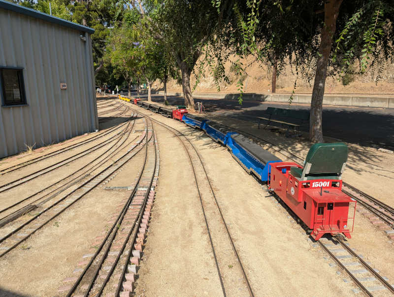
After that was done I proceeded to lower priority items. SPPA and SPSF both still have their red tags keeping them from Sunday duty but I am optimistic that will get fixed soon so I reversed them. Along with bench car sets 5 and 6 which were not reserved for Sunday runs. Running SPPA felt like driving a classic car and it was kind of fun. Surprisingly SPSF did not fill me with the same enthusiasm and it felt like a real chore. Maybe I was just feeling tired at the end of the day? If I get another chance at SPSF, I’ll have to see if the sensation persists.
Saturday 2026/6/27#
- 9 hours today, 267 hours this track year.
Jackson event train crew + bench planks.
9:00AM - 1:00PM (4 hours)#
With permission from Strawn, brought out Chessie for train rides at Jackson’s event for California Southern Model Railroad HO Gauge club. Always fun to show and tell to fellow train enthusiasts. Also marked debut of my Chessie colors outfit.
1:00PM - 6:00PM (5 hours)#
Changed into grubby work clothes for some grunt work: acting on Finch’s decision and go dispose all steaming bay bench planks. This means cutting off a lot of rusty old bolts with an angle grinder cutting wheel because it’s pretty hopeless to try to unfastening them. They’re all way past the point where PB Blaster would do any good.
Movie night!#
After all the old busted planks were in the dumpster, changed back into my Chessie colors outfit for movie night fun.
Thursday 2026/6/25#
- 11 hours today, 258 hours this track year.
Signals followed by siding rails.
8:00AM - 12:00PM (4 hours)#
A pleasantly productive signals day started by disconnecting the malfunctioning 5-way switch and reverting it to a basic switch that toggles between mainline and yard. Mainline trains won’t have to stop and yard trains are probably stopping soon anyway and so manually throwing the rest of the switches should not be significant hardship. Let’s see what people say after July 1st.
Signal BH was showing both green and red when it was supposed to be just green. Volt meter says signal BH is putting voltage on red LED and on red out even when there’s no detection. This is consistent with a relay that has failed closed so the signal driver board was replaced with another.
Signal board CB has been going dark occasionally, usually when things got hot. Volt meter confirms it wasn’t putting power on any lights when it was supposed to be green, so the driver board was replaced. Unfortunately the replacement had its own problem: an intermittent connection somewhere meant green is sometimes fine but sometimes very dark. We’re out of Smith signal driver boards for today so this will have to wait a bit longer.
1:00PM - 4:00PM (3 hours)#
After lunch we un-isolated the isolated power supply in M and, despite my fears, nothing blew up. At least not immediately. We’re not hooking the NT board back up yet, just watch this as-is for a while.
While testing the new voltages realized KB4 detection does not turn MB red as it should. There’s no available wire to fix this but fortunately KB4 is pretty short so this will only be a problem for short trains. Public ride trains are all long enough to avoid the problem.
Panel R was upgraded to the latest firmware featuring BLE interface for diagnostics support. This is promising but had some significant first draft issues. It is also our first taste of RF problems. It is strong enough to punch through a closed panel, so we can’t count on Faraday cage as a security barrier. Yet it is also not strong enough to cover the entire physical footprint of panel R signals.
Ended the signals work day by remapping panel I. We need accurate information on start/end of each detection block before we can safely perform any upgrades.
4:00PM - 8:00PM (4 hours)#
After the signals crew dispersed for the day, moved on to Finch assignment of removing loose surface rust from a pile of rail selected as candidates for the new siding project. This was satisfying because we just need the easy part of rust removal. I don’t need to tackle the annoying hard black layer to unveil shiny metal. Taking off the loose brown stuff is enough for the siding track crew to see which ones are likely usable and which are likely too rusted and pitted to use. Got about 2/3 of the way through the pile before I lost daylight. That’s enough for the track crew to get started and I’ll finish the rest later.
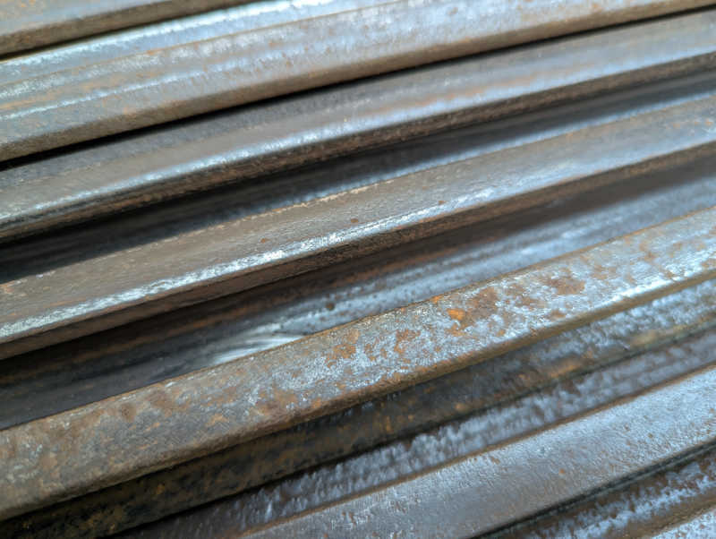
Sunday 2026/6/21#
- 8.5 hours today, 247 hours this track year.
Disney Sunday train crew.
8:00AM - 4:30PM (8.5 hours)#
Morning prep included a signals check lap with Strawn. False red verified gone but also found ICA is turning yellow then green too early. As soon as we saw it we knew it was an overlooked consequence of moving signal IM to MB and shortening panel I rail blocks. We don’t have available wire to fix this so it’ll have to wait for new wires.
Conducted for Smitrovich on UP1989 until lunch time when my voice started giving out. I first thought it was because I was doing train crew two days in a row but now I think I’ve been causing damage to my voice box doing my conductor safety briefing at the volume I’ve been doing it. I need to let it heal then learn to do my speech at a lower and more sustainable volume.
After my lunch I went to cover east gate so McCabe can go get lunch. I don’t need to speak nearly as loudly at this post.
Once McCabe was done with lunch I turned in Carolwood paperwork then returned to the station. I stepped in as Santa Fe 163 engineer so I don’t need my voice. Thankfully Ronne was willing to switch to conductor role for the rest of the afternoon.
After the train was put away, emptied a few trash cans I noticed had overflowed while operating SF163.
Saturday 2026/6/20#
- 11 hours today, 238.5 hours this track year.
Harris event train crew + bench planks.
8:00AM - 3:00PM (7 hours)#
Arrived in the morning to get Santa Fe 163 electric out and ready for rides for Harris event. Part of train crew with Famolare organized by McCabe. First outing of my Santa Fe warbonnet colors outfit.
After the official event ended I continued chatting with a few people who were curious about trains, my favorite audience. When one of them expressed some disappointment that they didn’t see any steam engines today, I pulled out Sankey for them to look over.
3:00PM - 7:00PM (4 hours)#
After all the guests have left I changed into grubby work clothes to continue steaming bay bench plank paint stripping work. Seeing before/after paint stripping is teaching me to recognize problems hiding under paint. Towards the end of the day I started going straight for these potential problems for the final few planks. It saves time, effort, and disc wear to uncover big deal- breaking problems instead of doing the whole plank.
Final status report:
- Primed and in great shape
- Already marked with black dot for discard.
- Primed but with mild warping
- Primed but has a significant end crack.
- Bare wood with significant end cracks.
- Primed but with rot at end.
- Black dot
- Bare with minor end cracks.
- Black dot
- No bench (ramp to track.)
- Significant rotted crack.
- No bench (bridge to other bay.)
- Rotted end.
- Warped with a lengthy crack.
- Rotted end and knot
- Cracks all over
- Bare and looks good except for knot with rot.
- Warped and misshappen when it was last painted.
- Black dot.
- Bare and looks pretty good.
- Minor warp, small knot, tiny end cracks.
- No bench.
- Black dot.
- No bench (hydraulic lift.)
Now that we know only a small fraction are in good usable shape, Finch decided we might as well pitch them all and get new planks all around the entire bay. We didn’t know until I started removing paint to see what’s underneath, so I’ll still call it a worthwhile research project.
Thursday 2026/6/18#
- 9.5 hours today, 227.5 hours this track year.
Signals work day followed by more bench plank paint removal.
8:45AM - 12:15PM (3.5 hours)#
Started the day scratching our heads trying to understand the unexpected interaction between panels I, K, and M. A train wheel rolling past the point where KB4 and MB1 meet can briefly conduct electricity across those two panels’ electrical systems. Which then somehow affects the panel M NT block adjacent to IB11, dropping its voltage between rails down to about 3.8V, which is below detection range but not what a real train would do. This false detection on IB11 triggered the false reds on II and IG.
No plausible explanation on how this happens but the discovery is enough to formulate a short term workaround: Disconnect NT block wires from the NT board in panel M, removing one element of the electrical path. This is acceptable for Sunday public rides with the rest of the work to be done later. It is possibly related to the fact power boards for K and S have both failed closed again, staying on 24x7, less than two weeks after they’ve been replaced.
I think there’s something going with the NT circuit. These are 12V DC relays and we’re running at least 13-15V DC through it in the typical case. If panel M NT was doing something weird, K and S are two of the closest panels to suffer electrical consequnces.
Looking at the situation in panel S, Strawn gave the dark NT board a flick and it came back to life. Wow seriously? Thinking maybe it’ll stay on, we closed up the panel and that was enough of a jolt for it to die again. Bah. Replacing it with another NT board was straightforward, but the replacement failed to put power on NT circuit. Few minutes of probing found a loose solder joint. I have a soldering iron but not immediately at hand. Good time to break for lunch.
1:30PM - 4:30PM (3 hours)#
After lunch resoldering the loose NT board wire restored functionality. We then moved on to panel J where Strawn could get up to speed on what I’ve done with the switch motor board. On the way out we looked at one thing I noticed earlier: some signals seem to turn from red to green quicker than they should. Found panel J diode 12 to have failed open circuit and re-routed it to diode 29.
With that small win under our belt we reversed directions to evaluate track situation for upcoming direction switch on July 1st. The good news is nothing is fundamentally broken, the bad news is we do have a list of stuff to sort through some with Sunday run impact. I was afraid we would discover an entire section of the layout to be dark or something nasty, so this is good news.
4:30PM - 7:30PM (3 hours)#
After Strawn left I evalauted reverse direction in Valley division and Disney loop. A few notes, nothing too major. Tried to fix a few noted issues and found them working correctly. Intermittent issues, my favorite!
After parking the Strawn engine in new track (so much easier now) went back to steaming bay benches and took paint off another plank. I started with the bottom of the plank and a more aggressive wire brush wheel and found the wheel lacking. It took too much of the soft wood off, and at the same time, wasn’t aggressive enough at taking off thicker bits of paint. The uneven behavior left a very rough finish. I switched back to the Merryland discs which are slower but more consistent and leaves a smoother finish.
Wednesday 2026/6/17#
- 11.5 hours today, 218 hours this track year.
Non-signals maintenance: leaves, benches, train relocation.
7:45AM - 10:30AM (3.75 hours)#
Found Clouse available as extra pair of hands so recruited into some leaf cleanup in the Bagley area. Since this is definitely official club work it was also an opportunity to give Clouse an orientation in running the center cab work locomotive.
10:30AM - 1:15PM (1.75 hours)#
After Clouse left I switched to my original goal: more steaming bay bench paint removal using angle grinder with paint/rust removal wheel.
2:15PM - 5:15PM (3 hours)#
Continued paint removal after lunch until I learned it was time to move Strawn train to a new track.
5:15PM - 8:15PM (3 hours)#
Moved Strawn train out of old track and stage it in the designated order for backing into new track. Because the new track is shorter, three of the cars have to sit separately in the pit until other track moves are complete.
Logistics of the move were mildly complicated by somebody enjoying dinner and I didn’t want to interrupt them. Or more accurately, I didn’t want to spook them into leaving their catch behind because I didn’t want to clean it up. About a half hour later, they took the leftovers home with them leaving only a few tufts of fur to mark the picnic site. I appreciate their tidiness.
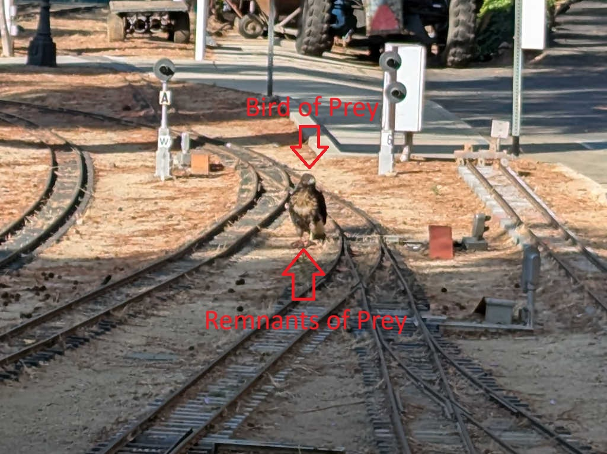
Sunday 2026/6/14#
- 8.25 hours today, 206.5 hours this track year.
Sunday public rides crew
7:45AM - 4:00PM (8.25 hours)#
Started the day by checking how the primed wood held up to overnight dew. I can see where water has pooled on some of the lower areas. I should paint over them soon (instructions say within 7 days) and in the future I should not leave the primer for more than a few hours (instructions say at least one) before painting top coat.
Pulled CN2002 out of Phil West barn and connected it up to a set of bench cars. Alexander arrived with replacement fuel pump and proceeded with installation. I helped data gathering for upcoming “musical trains” storage shed move.
Conducted for CN2002 pulling public rides for the whole day, minus the lunch break I’m a little more assertive about today.
After the last public ride train I asked to take CN2002 on a lap around the public loop. I’ve gained more confidence with the unique air brake system and getting close to the point where I feel comfortable running a public ride with this locomotive.
Alexander was one of the first beneficiaries of this morning’s research, getting to move from a third-level to second-level track.
Defect detector power was restored for reprogramming by Perez. In theory it should now power up on channel 4. If it starts interfering with channel 1 I’m cutting power again.
Fun time#
After train time was done, I asked Alexander to evaluate my thrift store electric unicycle. It appears to be large functional but have some definite problems that resulted in a tilted neutral position when pedals are supposed to be level with the ground. Might still be good enough to learn on. I tried a bit and got a few inches at a time but I’m not putting any serious effort into it until I can find my old rollerblade protective gear.
Alexander brought out his Serious Business unicycle to showed how one should behave. And pulled out his one wheel as well because why not. Calimbahin got started on the one wheel and made impressive progress for a first session. Certainly better than what I’ve done on my unicycle.
Saturday 2026/6/13#
- 10 hours today, 198.25 hours this track year.
Steaming bay bench refinishing begins
8:15AM - 12:00PM (3.75 hours)#
Started the day with a signals team discussion on how we can move forward. The current approach is trending generally downward. A crisis point still feels inevitable. Despite all our efforts we’ve only slowed the slope of descent moving the crash site further downrange. We need to find a way to gain altitude again and there’s no obvious way to do so.
After an unsatisfying session I changed gears to something with better odds of success: stripping off old cracking paint from steam bay benches and try to refinish them.
Starting with the same paint & rust removal angle grinder wheel I used for earlier rust removal projects.
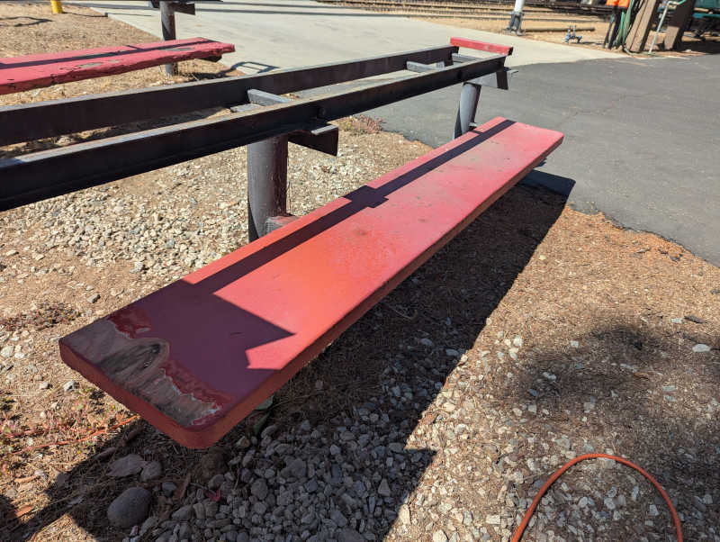
I took the first bench down to bare wood.
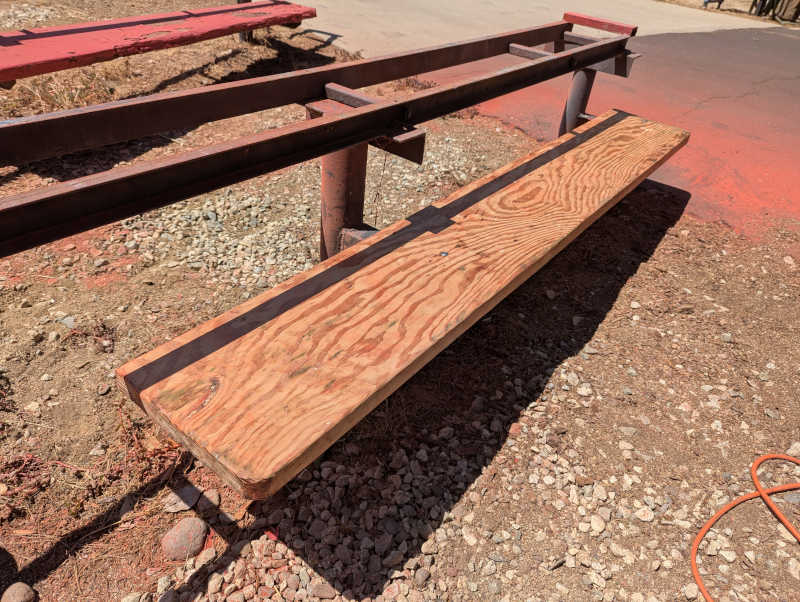
Then put on a few coats of primer.
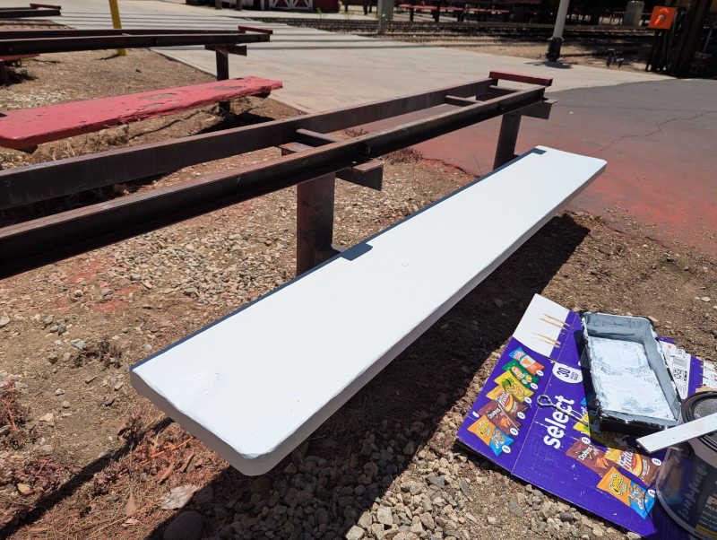
Let the primer dry over lunch and evaluate afterwards.
1:00PM - 7:15PM (6.25 hours)#
After lunch the primer seemed to have cured and it looks good. Encouraged by this success I tackled three more benches. Another one with the plank in good shape, and two others in marginal condition. All taken down to bare wood and primed.
I am not optimistic about the two marginal planks, but they got primed as well because I wanted to see if the primer is good enough to cover the cracked and rotted areas. The result: they are not. I’m not going to prime any more benches that show large cracks or rot after paint removal.
Tuesday 2026/6/9#
- 4.5 hours today, 188.25 hours this track year.
Emergency panel K rescue
7:45AM - 12:15PM (4.5 hours)#
Morning started with a quick Finch assignment to cut away busted old handle covers on the Phil West transfer table as part of preparation for painting.
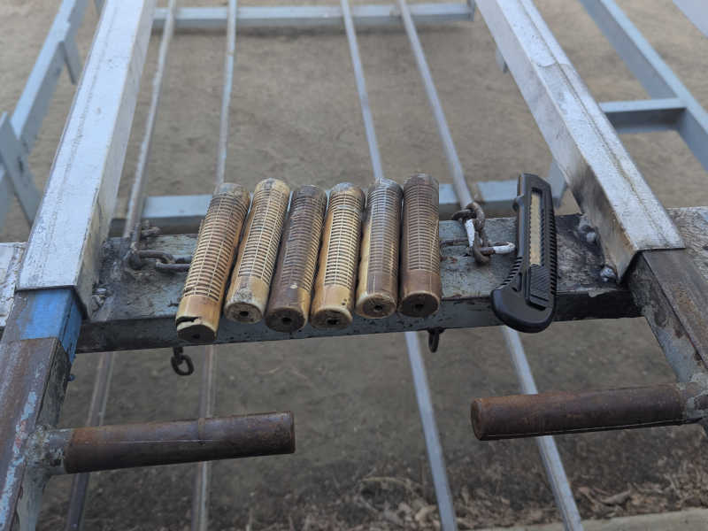
Then it was time for the unpleasant stuff.
In order to repair panel K, I was given the ESP32 brain and I/O boards that were slated for panel J. The I/O boards weren’t identical so the ESP32 code had to face some ugly hacks in order to perform today’s emergency rescue. Doing this on my laptop sitting next to panel K under the scorching sun squinting to read the screen was a 0/5 star experience. Would not recommend.
I got K back up to feature parity with where it was before I installed the defective power board, but the older rev. C boards didn’t have input capability which means some of the future to-do items for K would have to wait until we get more rev. E boards to replace those that got fried.
Since this replacement hardware was originally slated for panel J, the ESP32 upgrade for J would have to wait as well.
This whole episode could have been avoided if we used components that had any kind of QA process and plenty of spares for easy direct replacement if they fail. The reason we don’t have that are not technical, they are people, and those people weren’t here facing the consequences of their decisions.
Monday 2026/6/8#
- 11 hours today, 183.75 hours this track year.
Signals work - one step forward, two steps back.
8:15AM - 1:15PM (5 hours)#
Started the morning by finishing rail switch position sensor for JF. Now the signal head correctly shows red over yellow for diverging switch. Then to panel K to continue wiring up some of the cross-panel status wires that mostly serve to turn signals yellow when the next one is red. Strawn and Harper moved signal KB from inside to outside O’Brien-Moore Bridge while I worked on wires.
2:15PM - 8:15PM (6 hours)#
After lunch I finished up connected the known wires followed by a few tests to verify they were connected. Easy part was over! Now we need to find the wires that we know should exist but they were not labeled so we don’t know which ones they are. Some annoying wire tracing followed.
The good news: it looks like we have five unused wires running between K and L available for future plans like LB13.
The bad news: switch 3 wires weren’t what we thought they were. Wire color and thickness at the switch doesn’t match anything coming into the panel, so there is a wire joint somewhere. That’s going to be even more annoying to trace through and a project for later.
The worst news: I installed new power boards in K and S, and the new board for K was defective. Panel K stopped working and a frantic debugging session ensued. Just before we lost daylight the cause was pinpointed to a bad solder joint on the new power board, so one of the ground terminals weren’t connected to ground. Lacking a proper ground, 15.6V DC found their own way to ground through I2C components expecting 3.3V DC and that’s very bad for their health.
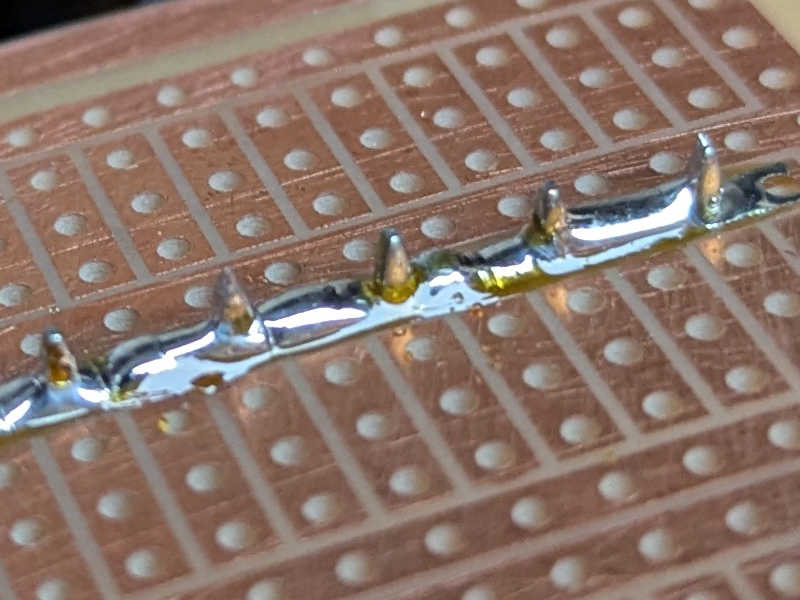
It’s bad enough that I had to carefully read inconsistent terminal labels, am I expected to verify every solder joint as well? This is unreasonable.
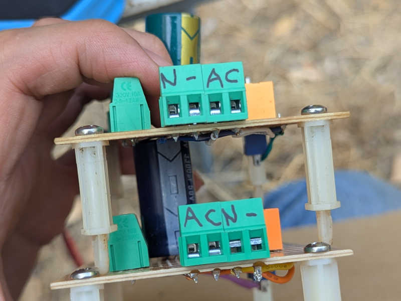
Sunday 2026/6/7#
- 7.5 hours today, 172.75 hours this track year.
Sunday public ride operations crew.
8:00AM - 3:30PM (7.5 hours)#
Prepped CN2002 for sunday rides: brought it out of the barn, connected dark green bench car set, performed most checks. Had to wait for Alexander to arrive with air compressor battery before test lap could take place. During test lap all signals looked good for public ride operations.
Ronne brought a nifty rail gauge tool. It will be on loan to LALS for a while under care of Nelson for track evaluation.
Tried 3D-printed bar to see if it’d make SF163 pedal less annoying to use. Ronne did not care for it, and that’s enough to end the project here. Glad a cheap and simple 3D printed part was enough to get an answer.
Conducted for CN2002 for most of the day. Strawn substituted one run so I could update Burden and Kristman on Santa Fe 163 status. Lunch break was overly late and my body crashed hard. Recovered after I got some food but let’s not do that again.
CN2002 had a weird buckling problem that justified a trip into the maintenance bay. Prime suspect is the rear truck cotter pin chattering against rear mid axle. Replacement pin now sits at a different position, see if that is better.
Went to refuel at the end of the day and oops the fuel pump is dead. My mistake in the morning forgetting to turn the switch back to “Off” and now I owe Alexander a replacement fuel pump. (UPDATE: Strawn said he did it which would explain why I didn’t remember making that mistake at all.)
Saturday 2026/6/6#
- 6.5 hours today, 165.25 hours this track year.
Santa Fe 163 electric locomotive maintenance.
9:15AM - 3:45PM (6.5 hours)#
Replaced dying fan with a new Comair Rotron PT2B3 purchased from Digi-Key. The fan is secured with four flat-head Philips screws with 5/16" nylon lock nuts underneath. Engine 163 body height meant it is nearly impossible for me to hold a wrench inside and screwdriver outside simultaneously myself. This task needed two people, one inside and one outside. Recruited Kallgren to help remove old fan and Famolare to help install the new one. The electrical connectors were no cakewalk, either, but at least I could do them on my own given enough time.
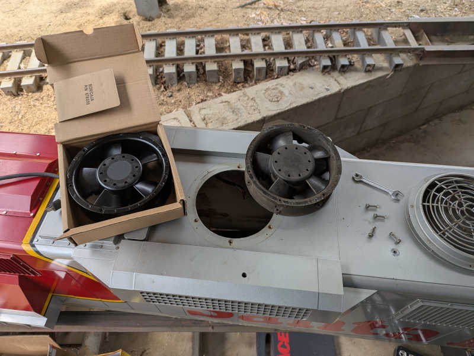
The cosmetic fan grate over this motor had a broken fastener “repaired” by cleaning up the broken shaft and the head glued back on. I fixed this properly with a McMaster-Carr shopping spree: tap set for 2-56 thread, small hex head bolts in 3/16" and 1/4" lengths, matching washers, and a tiny 1/8" socket wrench to turn those tiny bolts. Now it is a real fastener again.
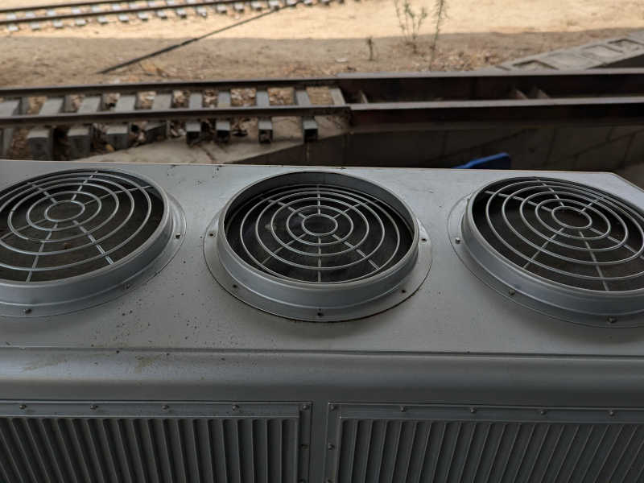
Once 163 had a functional fan, I proceeded with two cosmetic repairs. The first was to reinstall the collapsed grate over the middle of three false fan exhausts at the rear of the locomotive. PB Blaster and judicious use of the 1/8" socket allowed removing tiny fasteners without damage. Looks like the grate was held with epoxy or similiar material that has since become brittle and cracked. There’s enough remaining inside for me to mechanically snap the grate back into place but if this happens 2-3 more times there won’t be enough of the brittle stuff left to keep the grate up. Then I will have to decide on an adhesive or something but that is a concern for later. Fortunately I have an adhesive repair test run already lined up for that possibility.
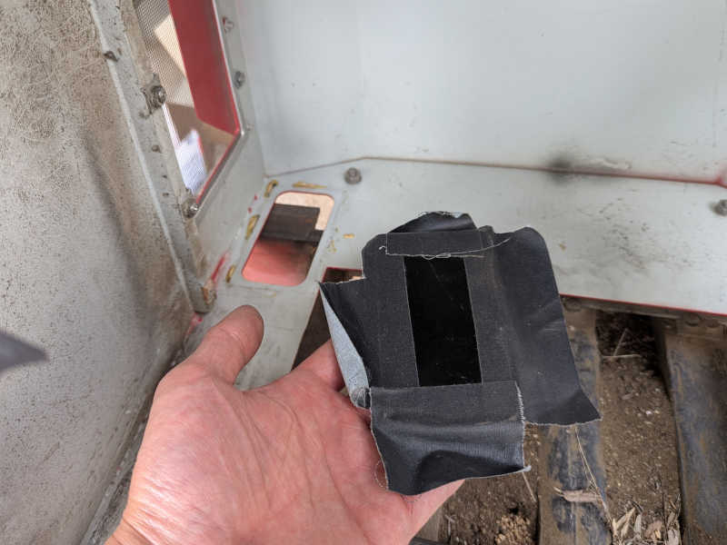
One of the cab windows that had fallen. Somebody tried to tape the window back up with gaffer’s tape but that did not hold for long. Upon Burden’s suggestion I bought a tube of RTV silicone for this job. I bought the clear colored type in case it bled outside but fortunately I managed to avoid that. This stuff takes an hour to cure. In hindsight I should have done this first and let it cure while I worked on other problems. Oh well. If this works out I may use it to repair the center false fan grate above.
Met Dolce Wang on the way out.
Thursday 2026/6/4#
- 11.5 hours today, 158.75 hours this track year.
Major rework for signals panel K
7:30AM - 12:30PM (5 hours)#
Strawn has been working up to this point for quite a while with extensive planning and preparation, and today is go time. Signals panel K upgrade from relay logic to microcontroller software defined logic. This will be a long work day.
Power management and switch motor control board remains in place.
Train presence detection circuits were upgraded beforehand.
Everything else was removed and holes drilled in the backplane to accommodate an ESP32 microcontroller board, buck converter to power that board, I/O boards to communicate with that board, and new signal head driver boards to illuminate lights based on software in that board.
Connecting them all were wires. Lots and lots of wires.
1:00PM - 7:30PM (6.5 hours)#
After a quick lunch (short on time! get back to work!) we worked through getting all internals reconnected and functional. We also got about a third of boundary conditions communication with adjacent panels by the time the team ran out of time today.
Some minor wiring issues were found and fixed in the verification and testing phase, like switch motor polarity needed to be flipped so its power on default state is mainline instead of diverging.
A long standing mystery was solved today: that dimmer switch in panel K, which is drawing power but not connected to any signals logic, was for the covered bridge interior lights. Now we know, and I’ve labeled it accordingly.
Went down to panel J to reconnect rail switch position sensing wiring for JF. Got most of the way there but didn’t have the proper crimped connector to reconnect to micro switch spade connectors. Will have to finish this later.
Sunday 2026/5/31#
- 10.5 hours today, 147.25 hours this track year.
Sunday crew + SFE
7:30AM - 4:00PM (8.5 hours)#
Sunday morning setup work including a signals verification run and monthly check of fire extinguisher gauge needle in green. (It’s close enough to June.)
Three trains were set up to run public ride operations, so Alexander and I decided to help the club live up to its name by firing up his live steam locomotive. The steam and smoke is a delight to our guests. Alexander ran his engine and I help do things like flipping rail switches ahead and behind him to minimize disruption to Sunday ride operations.
4:00PM - 6:00PM (2 hours)#
After Sunday ride concluded and everything was put away, Alexander helped me dig into Santa Fe 163 electric locomotive as the maintenance bay hoist track is now available. The fan is a Comair Rotron PT2B3 and Digi-Key sells a direct replacement. I’m sure compatible alternatives exist but until I have a better feel of what’s going on I’m going for the safety of an identical unit.
One new discovery today: since the fan no longer has control over its initial startup, it might end up spinning in either direction depending on the gust of wind (or flick of the finger) that started it. When it is running in the designed direction, it moves a lot of air with impressively little noise. When it is spinning the wrong way, that’s when it howls like a banshee. A loud fan had been noted as a problem weeks ago, so this has been a problem for quite some time. Glad there’s an actual explanation now.
As a practice dry run for fan replacement, we determined the fan grill will need to be removed. We were amazed those tiny little hex heads are real fasteners, and they are as much of a pain in the butt as we were afraid they would be. Looks like one snapped off sometime in the past and someone glued it back on. The other pain in the butt will be the power wires, as the small spade connectors are right next to one of the nylon lock nuts holding the fan in place.
Do I remove the nylon locknut first or the spade power wire connectors? That will be a difficult decision I’d need to make when the replacement arrives.
Saturday 2026/5/30#
- 8 hours today, 136.75 hours this track year.
Train crew for club sanctioned event w/ASEPO train crew + signals + SFE.
9:00AM - 5:00PM (8 hours)#
Some members of LALS are also members of ASEPO, the Alliance of Special Effects & Porytechnic Operators, so they’re hosting a party here. This is a club sactioned event so Strawn and I prepped the Santa Fe Electric to ensure there’s a train ride available if anyone wants one. This turned out not to be a critical problem as Morris and Baker also brought out their trains so there was enough capacity.
Given there was enough capacity, when intermittent false red on KAA cropped up, we jumped on it with tools and instruments. Diagnosis: false detection due to guard rails on O’Brien-Moore Bridge, installed just before Spring Meet. They conducted electricity across multiple detection blocks, confusing the circuit board into thinking there was a train on the bridge. This intermittent false red was a problem during the meet as well so it’s nice to have an explanation.
After we had an explanation, the issue was filed away for a future signals work day and we went back to giving train rides. I noticed Santa Fe Electric’s fan was acting up again.
After the party wrapped up I started probing fan wiring. 120V AC throughout the circuit. Given there was power, it occurred to me to check the fan itself and that’s the problem: it could no longer spin from a dead stop by itself, so even though it receives power it couldn’t do its job unless an opportune gust of wind started it turning.
I wanted to pull the cover off again so I could read specifications and start researching a replacement fan, but the maintenance bay track was occupied and I will have to wait.
Friday 2026/5/29#
- 6.5 hours today, 128.75 hours this track year.
Signals work day
8:00AM - 12:30PM (4.5 hours)#
Finish what we started yesterday with panel M upgrade to microcontroller brain. By lunchtime we have replicated existing functionality that was previously done with hard wiring, but now software control will allow future complexity.
1:30PM - 3:30PM (2 hours)#
Once the brain was up and running, we wired up communication from panel K to panel M so signals can finally properly turn yellow in response to following signal being red. Something it couldn’t do before.
Thursday 2026/5/28#
- 7 hours today, 122.25 hours this track year.
Signals work early + late, with a play break in between.
8:00AM - 11:00AM (3 hours)#
Prepare panel M for ESP32 microcontroller brain upgrade.
Play break!#
Cammarata’s Gold Rusher
3:30PM - 7:30PM (4 hours)#
Finish up first statge of panel M prep, then moved on to panel J for more debugging on switch motor board. Caught oscilloscope traces that it can flip polarity not just once but multiple times, and caught scope trace that panel voltage sags down to as low as ~6V for a few milliseconds.
Swapped green and yellow wires for JH, sacrificing yellow so we have green.
Performed a quick test loop running in July-Dec direction. Cautiously encouraged by mostly functional signals.
Tuesday 2026/5/26#
- 6 hours today, 115.25 hours this track year.
Santa Fe Electric orientation with Burden, get to work.
2:00PM - 8:00PM (6 hours)#
Now that fun time is over, it’s back to work. Burden still have a few vacation days left so I grabbed a time slot to go over what to do with the club-owned Santa Fe 163 electric locomotive. Covered basics like how to properly remove the cover and battery water top-off procedure, and some recent history project to-do like a new fuse holder that fits in with the existing ones.
Once our meeting was over, I got to work. First wiped down dust and battery acid seepage, then start tracing wires. I found no thermal switch for the ventilation fan, and I found disconnected wires where the axle reed switch was indicated on the schematic. More mysteries for later.
Monday 2026/5/25#
- 5.5 hours today, 109.25 hours this track year.
Infrastructure crew back at work + cleanup.
11:00AM - 4:30PM (5.5 hours)#
Help Harper with siding work moving some track panels around.
Trim some trees whose low-hanging branches are hitting guests in the face.
Fire extinguisher wrangler for green container cleanup. Three extinguishers were dug up in the debris. One looks like a tiny plastic toy, none of them have been certified.
General party cleanup. Emptying garbage cans, etc.
Sunday 2026/5/24#
- 2 hours today, 103.75 hours this track year.
Gate duty
9:00AM - 11:00AM (2 hours)#
Front gate duty with Naimy and Famolare
Saturday 2026/5/23#
- 1.5 hours today, 101.75 hours this track year.
Spring meet official club duties
1:30PM - 3:00PM (1.5 hours)#
Conductor for special thank-you train ride for middle school band playing at our memorial ceremony, on top of assisting Walker and Tucker running that event.
Wednesday 2026/5/20#
- 4 hours today, 100.25 hours this track year.
Final prep before spring meet
3:00PM - 6:00PM (3 hours)#
Took a lap around most of the layout, not just our Sunday public routes because Spring Meet guests will be using the full thing. Valley division as well as highline, mountain division as well as Disney loop. Ignoring the known standing issues, all signals look good and all switches functional.
After a few minor repairs, it’s pencils down time for signals team! Trains will start running soon and we aren’t going to risk making anything worse by making haphazard repairs in the middle of the meet. All signals cabinets will remain locked until at least Monday afternoon.
Campers starting to set up tent. While the club officially didn’t promise power hookup, some people have a medical need. (CPAP machine.) Pulled out extension cords so people could route around our failed 110V AC power sources.
8:00PM - 9:00PM (1 hour)#
After spending some time socializing and admiring incoming equipment, resumed being club staff hosting our guests. Helped with a few last-minute repairs with stuff found in the work car, and used the center cab work train as yard switcher to move some passenger cars into the pit while their steam locomotives are moved onto a steaming bay to be fired up later.
Sunday 2026/5/17#
- 10 hours today, 96.25 hours this track year.
Disney Sunday operations crew
7:15AM - 5:15PM (10 hours)#
An equally long, but not as exhausting day, as public ride operations crew because it’s fun to see happy faces of kids (and kids at heart) excited for train rides.
Started with showing Carolwood Foundation crew how to lift the lid on the new air compressor barn Davis has built. It looks much better than the broken down old gray thing.
Helped solve a Carolwood morning emergency: the souvenir hut has no power. They might have lost power the same time Inchberg (and panels A-C) did but nobody checked until today. Backtracking power wire we saw it was connected to our steam plant, which also had no power. As a workaround we found an outlet coming out of the ground next steam plant fence far side of Carolwood souvenir hut, and running an extension cord would have to suffice for today. On the upside this gave me an opprtunity to meet more Carolwood people.
SPSF conductor through lunch. After lunch break was reassigned to lunch relief for Ronne, Santa Fe Electric engineer. After Ronne came back online, I went to wash and dry dishes and cookware in the kitchen. Disney Sunday meant a breakfast as well as lunch was prepared in the kitchen so there was double the amount of stuff stacked in the sink.
Saturday 2026/5/16#
- 10 hours today, 86.25 hours this track year.
A very long and tiring day on signals.
9:00AM - 12:00PM (3 hours)#
Drove into the parking lot to find Strawn and Brock already in conversation. Once the topic moved beyond where I can contribute, I drifted off to fix problems. Top of the list: KAA whose behavior changed yesterday. I found a wire loose near where I had been working, and a pretty obvious location for it to go back into, and it is in a chain of wires leading to KAA. That’s all consistent! I put the wire into the obvious place and that appears to have restored KAA behavior.
I was tracing through wires with a goal of fully understanding what’s going on with KAA (why does it blink weirdly?) when I was called in to join a meeting talking about how to interface the new signal head driver boards with old Smith XO boards. I think I understand the concepts now, next up: hands-on to see if it works.
12:30PM - 7:30PM (7 hours)#
Williams arrived at lunchtime, and after food we started looking at power for panel C. Being a wise man, Williams did not blindly trust our work and asked to review the whole wiring run. Knowing we are human, I gladly welcome an experienced set of eyes and walked through our findings and execution of plan.
Satisfied we’re not a bunch of boneheads, Williams helped to disconnect the temporary extension cord workaround. Then he flipped the breaker and there was light. And no smoke or fire. We are happy.
I had zip-tied the extension cord to adjacent chain-link fence to keep things tidy. Now I can cut those ties and coil the cord for storage in the tool car cabinet alongside appliance cord.
Next headache: false red on EAA. Started with the usual suspects: bond wires and track resistors. Everything worked fine so it didn’t make sense why there is a false detection. I replaced the detector board, and the “detect” LED is still on even though there’s no fault and voltages are good. Spent several hours trying to backtrack through nonsensical situations until I started selectively disconnecting wires to isolate elements. This is when I discovered the “3-into-1” board managing merge priority is backfeeding voltage out of its input ports, which does things like lighting up a detect LED on a detector board even when there’s no detection. That was a very misleading situation that wasted several hours.
I disconnected power for 3-into-1 board so it could no longer actively feed back into the input signal network. We lose the priority referee but at least we have true red indicating occupied blocks instead of false reds.
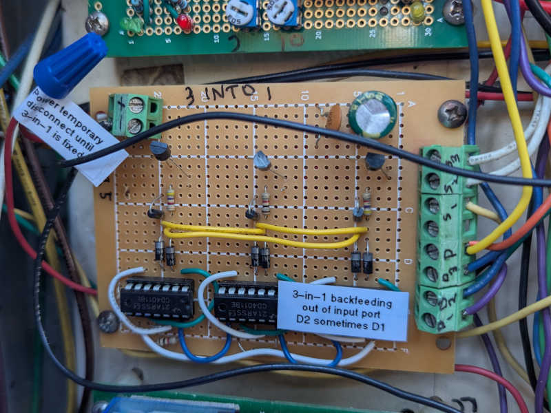
7:30PM Playtime (No club hours)#
Fortunately the Russos were visiting and it’s always uplifting to chat with fellow train fans. Gave them a train ride, because why not, and told them about Disney Sunday tomorrow.
Friday 2026/5/15#
- 8.5 hours today, 76.25 hours this track year.
Signals panel K and others.
8:00AM - 12:00PM (4 hours)#
Started the day by fixing the Phil West transfer table. The chain has been popping off and the easiest thing to try first is making sure all chain sprokets are coplanar. Somehow the topmost sproket has migrated almost two inches and that could not have helped. Helped De Philip pound that thing back into proper place.
Picked up where we left off before power crapped out: completing wiring for panel I-M-K communication. Now short trains won’t get lost by the signals system and potentially causing a false green.
Strawn and Harper investigated pulling fresh wire to KD to address a failed wire, which has been swapped around so we sacrificed yellow. This will be a bigger job than originally expected. New signal wire that would have supported KD yellow remains unconnected until we can actually light KD yellow again.
12:30PM - 5:00PM (4.5 hours)#
While Strawn and Harper investigated running new wires for JFA (which has a dead wire problem similiar to KD) I went over to panel J for another item that’s been sitting on the to-do list: get data on how switch motor board rev. D interacts with panel J. Voltage and current of unconnected wires were unremarkable. In comparison, oscilloscope trace was very interesting. The motor received voltage to flip in the correct direction, but only for less than ten milliseconds, before power polarity flipped again. This explains why we could sometimes see a tiny twitch when the rail switch failes to flip.
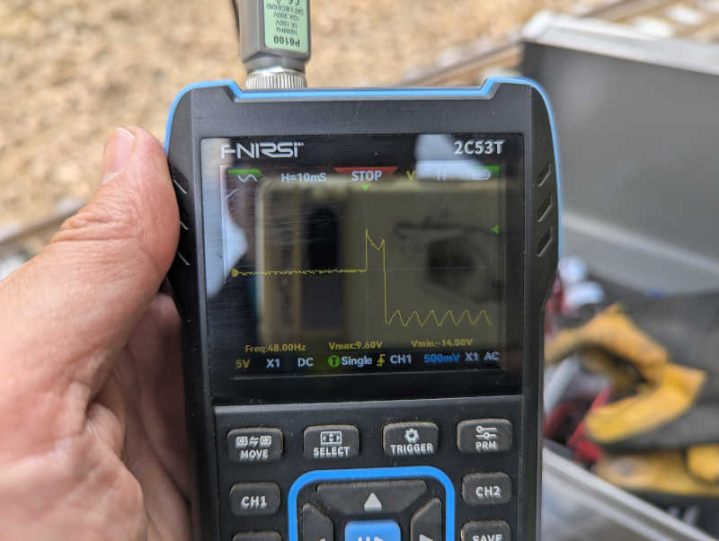
Took an evaluation lap around the layout afterwards looking for problems. Saw a new one: KAA isn’t turning red like it used to (weirdly blinky but still red) when train entered the block. Crap, I might have broken something and will need to get back to it tomorrow morning.
Thursday 2026/5/14#
- 7.75 hours today, 67.75 hours this track year.
Signals panel C new power conduit
7:45AM - 12:30PM (4.75 hours)#
Started the day by turning on signals to see if we have dual side-by-side false reds on both quad-head coming down Davis and triple-head entering station. Good news: it’s there! Opened up panel C and found another infamous touch-sensitive block detector boards. Likely bad solder joint which can also misbehave based on temperature.
One half of this board was responsible for a block on main inner loop, and the other half a block on main outer loop. So when it faults, it causes false reds on both inner loop (quad) and outer loop (triple) signals.
The perforated prototype board cracked apart at mount when pulled, slicing my finger open in the process. That’s a bit of extra excitement I did not need.
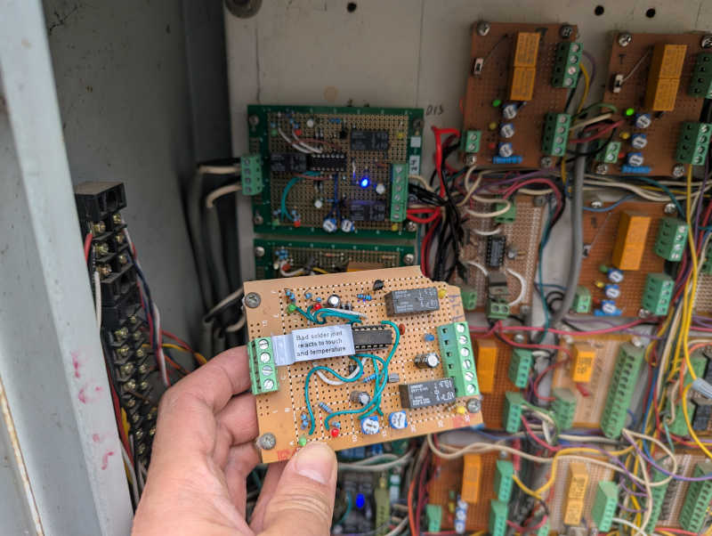
I started troubleshooting a signal that was showing both red and green simultaneously which it should never do. I got as far as knowing both panels B and C are involved before I was summoned to help with the new power conduit project. This faulting signal is lower priority for now as it is for the opposite direction.
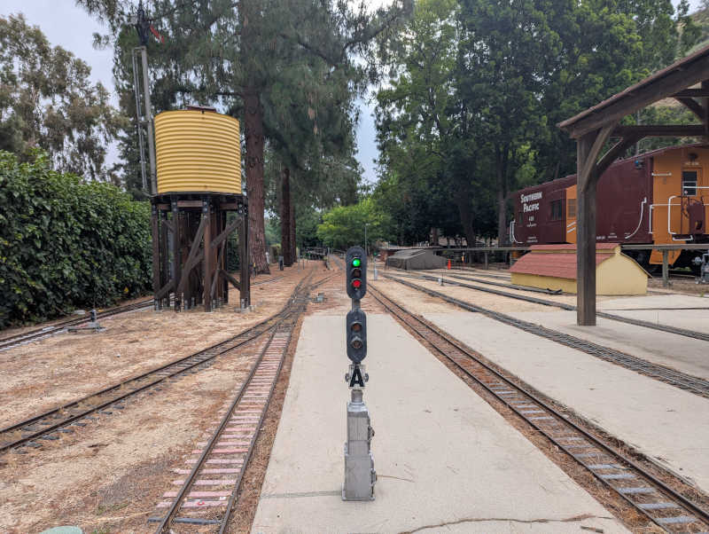
Got as far as we could on the conduit project and built a Home Depot shopping list for what we still need. Combine shopping run with lunch.
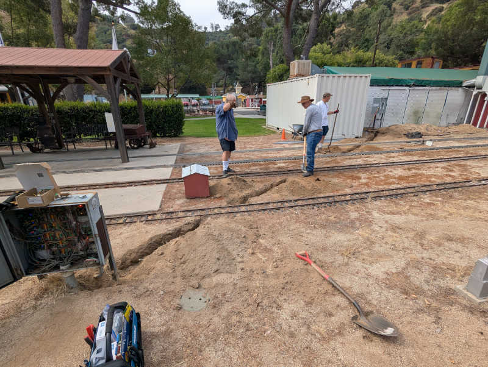
1:30PM - 4:30PM (3 hours)#
Finish up the power conduit project then run a trio of wires through the fresh conduit. They are not connected at either end, that’ll be done by people who know what they’re doing with 120V AC.
Fill the trench back in and clean dirt from track so it almost looks like we were never here.
Sunday 2026/5/10#
- 8.5 hours today, 60 hours this track year
Sunday public ride operations crew
8:30AM - 5:00PM (8.5 hours)#
Started the day with miscellaneous Sunday public ride setup work, including helping with certifying Fuad engine for operations, pump house bulb, and taking a loop with Lincoln to verify signals functionality. No false reds, everything worked well except two known problematic signal heads. Quad-head coming down from Davis mine and triple-head entering station.
Was told I would be on lunch relief alongside Alexander. Ate early so we don’t end up doing that on an empty stomach. Mostly conducted but got a loop as Santa Fe Electric locomotive engineer. Relief crew duty was interleaved with kitchen fridge restocking.
After wrapping up for the day with Santa Fe Electric back in its quarters, I walked N. Guzman physically through the known situation around Inchberg so he knows what we know. After that I found Dorado cleaning the kitchen by himself so I decided to help.
Saturday 2026/5/9#
- 11.25 hours today, 51.5 hours this track year
Signals power restoration + East Valley Lines event train crew
8:00AM - 12:00PM (4 hours)#
Investigated suspicion around the 110V outlet in Inchville and suspicion was justified: that’s where the power came from. Wires led to a vault next to a 4.75" gauge storage barn and to outlets within it. We could access one of the outlets and confirmed it had lost power as well, but none of signals team members had access to the rest of the barn and could backtrack no further.
Armed with a borrowed tone tracer I verified all of yesterday’s findings: that everything we thought was on the same circuit was indeed so. Panels A, B, C, Disney crossing compressor, unconnected wire in shack, Inchberg outlet, and storage barn.
McMurray joined the crew to lend his electrical expertise. Reviewing our current findings he agreed they sound reasonable. A plan was devised: we will sever electrical connection at the defect detector junction box, disconnecting signals A+B+C+compressor from Inchberg. We will then power it from a separate source. Long term source is the electric breaker panel behind the kitchen, we will run a power conduit underground to panel C. But we need power NOW so we also have a short term solution using a Home Depot extension cord.
Panels A, B, and C returned to life, as did the crossing air compressor. Inchberg remains without power but committee head Guzman has been notified.
1:00PM - 8:15PM (7.25 hours)#
Wrapped up some details after lunch then switched gears to prepare for a club sanctioned event with East Valley Lines. Connected Strawn’s locomotive (“Chessie”) to a set of bench cars and also brought out Santa Fe Electric. It’ll be an all-electric ride service today, fitting for a N-gauge train club as all of their trains are electric.
Chessie didn’t look great sitting adjacent to clean and shiny Santa Fe Electric so I gave Chessie a cursory wipe-down while we wanted for EVL. It made a big difference but there are many places where I need to come back with cotton swabs for detail. Some EVL people came over to chat while I worked and one of them said Chessie is modeled after a EMD SD50 locomotive.
After EVL event I returned to signals work, pulling out a bag of zip-ties. I didn’t like having the temporary extension cord strewn all over Bowlus siding so I coiled them up and hung them on the chain-link fence.
Friday 2026/5/8#
- 7.25 hours today, 40.25 hours this track year.
Troubleshoot loss of 110V AC power to panels A, B, C.
7.45AM - 3:00PM (7.25 hours)#
The signals team reconvened to pick up where we left off Thursday but we had to throw that plan out the window when panels A, B, and C failed to power on. I started troubleshooting a power ring network issue but it was worse than that: we lost 110V AC power to those panels.
Sometime in the past the team determined a specific electrical panel breaker would cut power to those signals panels. That breaker was fine, so tracing begain in both directions: from that electrical panel breaker downstream and from signals panels upstream.
We learned about several electrical breaker panels that we had never noticed before.
There is a set of power outlets about 18 inches from panel A and, curiously, they are a completely separate circuit. They both enter into the same underground wiring vault adjacent to panel A but they are not connected. Those outlets have power and panel A does not.
No power feed wires were found adjacent to signals panels B or C, either.
The air compressor driving Disney crossing gates is on the same circuit as these three panels and has also lost power.
Smith remembered that power fed in from a small wooden shack next to the Disney crossing air compressor. There is indeed an AC power wire in that shack but it’s not connected to anything else and the shack is empty.
One box west of the defect detector has a conduit going underground sweeping south. This was traced to a pair of 110V power outlets poking out of the ground in the middle of Inchberg. The wiring in this area is suspiciously complex for a power outlet.
Thursday 2026/5/7#
- 9.5 hours today, 33 hours this track year.
Signals work day + Santa Fe Electric cleanup
8:30AM - 12:00PM (3.5 hours)#
Returned to panel L switch motor 1 (main/Akins) which I disconnected Sunday morning. We could reproduce the unreliable switching behavior that caused it to be disconnected. Not switching upon button press is merely annoying, but the loss of trust in a switch motor board means we can’t be certain it won’t switch underneath a passing train. A replacement motor control board was the solution for today.
Resolving the immediate public ride impact issue allowed us to resume working on panel M and K so they can keep each other updated and turn signals yellow to warn of red block ahead under juristiction of an adjacent panel.
12:45PM - 4:00PM (3.25 hours)#
After a lunch helping us cool off from the heat, continued working on panel prep concluding with installing a new block detection board in panel L as a step towards consolidating space so there’s room to support new block 13
4:00PM - 6:45PM (2.75 hours)#
After the signals crew dispersed, worked on Santa Fe Electric as my solo project. Wiped down all five bench cars, cleaning off majority of dust, dirt, and shoe scuff marks. There’s one big blob of… bubble gum? I’ll have to attack later with Goo-Gone or similar. Vacuumed off all the benches but they still look pretty ratty. LALS will need to reupholster these benches at some point. The caboose also got a wipe-down, though I stopped short of cleaning off its internal electronics equipment. I’ll have to come back later to learn what they are before I touch them.
Monday 2026/5/4#
- 5.25 hours today, 23.5 hours this track year.
Santa Fe Electric diagnosis then cleanup
1:45PM - 7:00PM (5.25 hours)#
Started by fixing the false reds on McKelvey signal bridge. (HA/HB) Thanks to color-coded washers it was quick to find the ends of the physical detection block. I found a track resistor with one end loose. Santa Fe Electric and Cook derailed in this area on their morning test run, due to fallen rocks. I think someone who helped re-rail the engine inadvertently kicked the resistor loose. I reattached the track resistor with a shiny new screw and conductive grease.
With false red fixed, I resumed troubleshooting Santa Fe Electric bench car derailing issue. Some of the couplers were fixed during recertification, but the derailing bench car’s coupler was untouched. Thought it still might be some sort of multi-car interaction, tried running through with just the problematic bench car as the only car. Still happens.
Recruited Harper to help diagnose, a second set of eyes and another brain is always useful. He saw no obvious problems, either, but did notice the couplers were thrown to near or at end of their swing range in the middle of the S-curve where derailment always happens. He also brought a bubble level and found the track was not level in this area. After he leveled the track, derailment stopped. I went back to the yard to pick up the rest of the train (instead of just a single bench car) and ran through full length twice with no derailments.
There’s still something unique and mysterious about this bench car underlying its sensitivity to out-of-level track. The critical symptom of derailment has been mitigated and that’ll have to be enough for today.
Had a bit of time to spare so I cleaned out the storage bin on the engineer’s riding car. Several broken things got tossed (we don’t need to hold on to a broken eye bolt…) and the rest rearranged.
I found a trio of identical screws rattling on the bottom. Looked around and saw they were supposed to help hold the infrequently used rearward-facing second seat and I returned them to their job.
The lid is designed to be held open with two chains, one towards the front of the train had come loose leaving just the rear chain. Reattached front chain so now we have redundancy again.
Sunday 2026/5/3#
- 11.75 hours today, 18.25 hours this track year.
Sunday operations
8:00AM - 3:30PM (7.5 hours)#
My Sunday operations began with deactivating an unpredictable switch motor (L SM1 main/Akins) and scoping out new signals issues. Two side-by-side reds coming out of Davis mine/entering station that cleared up as weather warmed up and two side-by-side reds on McKelvey that stayed the entire day.
Traced down another odd noise. Fortunately this one was not a piece of rail threatening to cause derailment, but a tall plant tapping against the underside of bench cars.
It was an eventful day with high rail traffic and a few derailments. We had six locomotives on public ride operations though I don’t think they were all running at the same time. The cloudy weather reduced the number of public ride passengers which was helpful because the operations crew were kept plenty busy learning how to operate with so many trains.
My public ride operations day concluded with conductor duty for the last few public rides pulled by CN2002 and locking up west gate at the end.
3:30PM - 4:15PM (0.75 hours)#
Orientation and familiarization with engine CN2002, whose throttle control is very similiar to UP1989 but air brake control is different. There’s an air pressure gauge but it is not easily visible to the engineer so I couldn’t use the same techniques of watching pressure gauge. Alexander is trained enough to detect brake activation by feel alone, I’m not there yet. Should not run public ride operations until I do. After the familiarization lap, help put CN2002 away.
4:15PM - 7:45 (3.5 hours)#
Santa Fe Electric usually stays coupled to its own set of bench cars, which had proven trouble-free but today the last car derailed several times at the same location in Davis Mine when unloaded. Wheel gauge tests checked out clear, and all points of articulation are operable. (Though lubricated with graphite dry lube anyway.)
It is easily reproducible at a specific location in Davis Mine, except at very low speeds. Nothing visually obvious stood out about that segment of track. It is the middle of the S-curve, so I took the train through both stations and their S-curves, no problem.
During recertification day this set of cars were broken up to fit on steam bay rails, and there was no guaranetee they were put back together in the same order. As an experiment I moved the last car to the front, and the same car derails. So it’s not some issue of certain bench cars not playing well with others. At least I can hear it happening more easily, and I don’t have to walk as far to re-rail the bench car.
I lost daylight before I could figure it out. Will have to resume later.
All this practice means I’m getting really good at re-railing bench cars.
Saturday 2026/5/2#
- 6.5 hours today, 6.5 hours this track year.
9:00AM - 3:30PM (6.5 hours)#
Track hours reset to zero at the beginning of May for a new year of accounting! My first task of the new year is to join the club equipment recertification crew at Cammarata’s direction. We inspected the locomotives, bench cars, and cabooses. Most of them passed but we did find a few issues. Some we could fix now (couplers that had lost their springs) but others will have to wait for later.
We got some peace of mind our equipment is in good shape, and we got a really fun club engine group photo out of it.
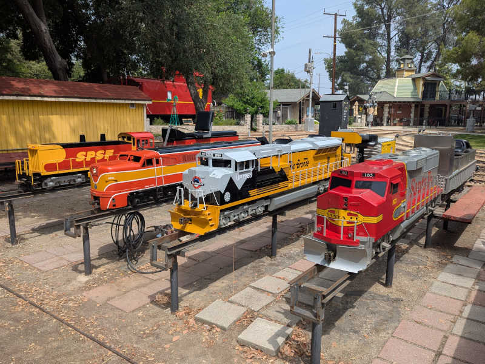
Thursday 2026/4/30#
- 10.25 hours today, 258.5 hours this track year.
Signals + Track work with Harper, Santa Fe Electric cosmetic cleaning
8:45AM - 12:15PM (3.5 hours)#
Came in at Harper’s request to help finish up the underground wiring infrastructure labeling project, adding color-coded washers to mark locations of concern to signals team. Mostly to review and compare against reference map but also to help resolve some mysteries like helping to find feed wires that aren’t where we expected them to be.
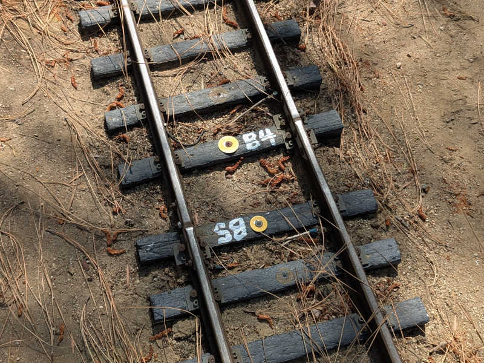
1:15PM - 5:00PM (3.75 hours)#
After lunch we wrapped up the label project and start fixing some track issues we spotted while looking for wires. Such as this fiberglass rail joiner with only bolts on one side. Where did the bolts for the other side go?
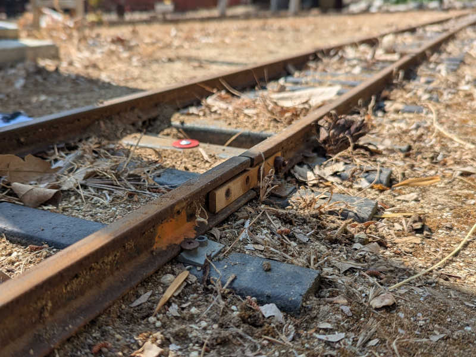
We couldn’t fix everything on our plate. While we fixed the insulating rail switch joiner for reversing track towards valley division, the counterpart for southern end of narrow gauge barn will need a machine shop to tap and thread screws at the correct locations.
5:00PM - 8:00PM (3 hours)#
After we wrapped up track work I went back to Santa Fe Electric for a cosmetic refresh. Following Suncin instructions of using lemon-scented Endust and a micro fiber towel, I got to work making the club’s workhorse look spiffy. Guests take pictures of this engine and it could look better than it did when I was running public rides with it last weekend.
The biggest danger are decals, which are turning brittle after some number of years. This is not helped by the fact that whoever applied these decals took some shortcuts that are now going to bite me. Look at this decal bridging right over a surface feature hanging over air. This is just begging to get caught on something and rip.
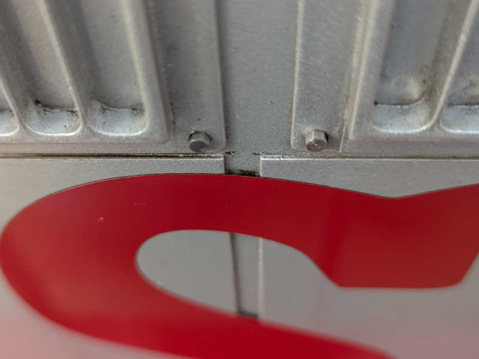
But even if all decalas were applied well, age and sun takes its toll. This is especially visible on the yellow band on top of the locomotive, which is visibly cracking and peeling. I’m not sure what can be done about this except to carefully trim off the peeling bits so they don’t pull more up behind them.
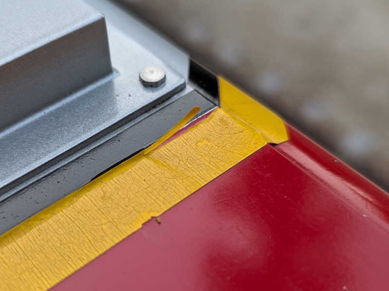
Stuck-on grime below the main deck needed something more powerful than Endust, and for that purpose I brought Simple Green and switched over to some old terry cloth towels. Then for the operator’s console, I tried some Barkeeper’s Friend which helps but the amount of manual buffing I had to do implies I’m not using the right tool for the job.
Chatting with Murphy who came over to see what I was doing, I also learned it was modeled after EMD GP60 M and there’s even a very similar looking engine on that Wikipedia page wearing the same livery. However that was number 147 and this number 163 does not seem to correspond to a historically notable engine. Perhaps that number meant something to the club members who had built it, instead of an actual unit.
Tuesday 2026/4/28#
- 6.25 hours today, 248.25 hours this track year.
Signals work, track work, and Santa Fe Electric
8:45AM - 1:00PM (4.25 hours)#
Arrived to find Valley division signals on again when the rest of the layout was off. Walked over to panel S and was surprised to find the power board I replaced on Sunday is doing the same thing as the previous board: continuity across AC line terminals regardless of NT status. Is this just an amazing coincidence that a board failed in less than 48 hours and in the exact way as the previous? Or is there something else? Since I don’t have another power board to swap in, I have time to ponder while panel S stays on.
Afterwards I resumed signal GF false red investigation. Harper was on hand to describe recent work in this area and help dig up underground wires. As soon as I pulled them up I saw the problem: their insulation had been damaged allowing corrosion to do their thing.
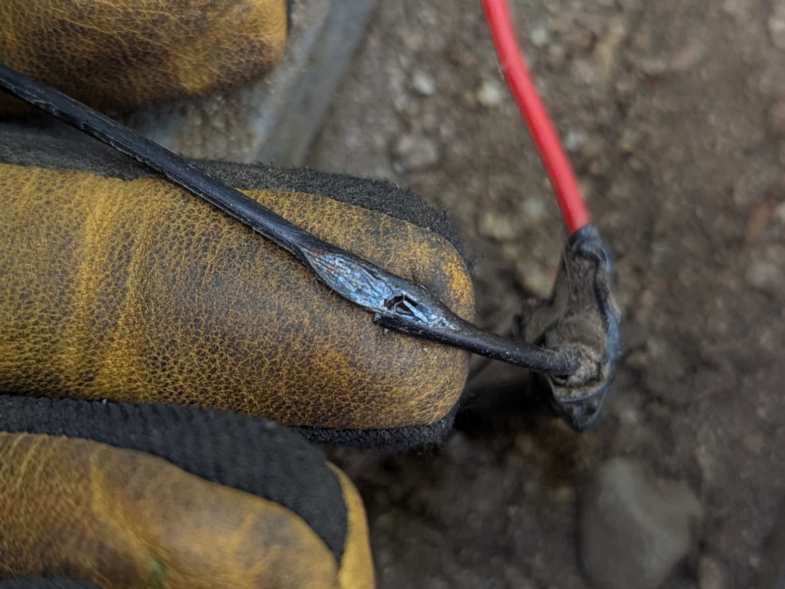
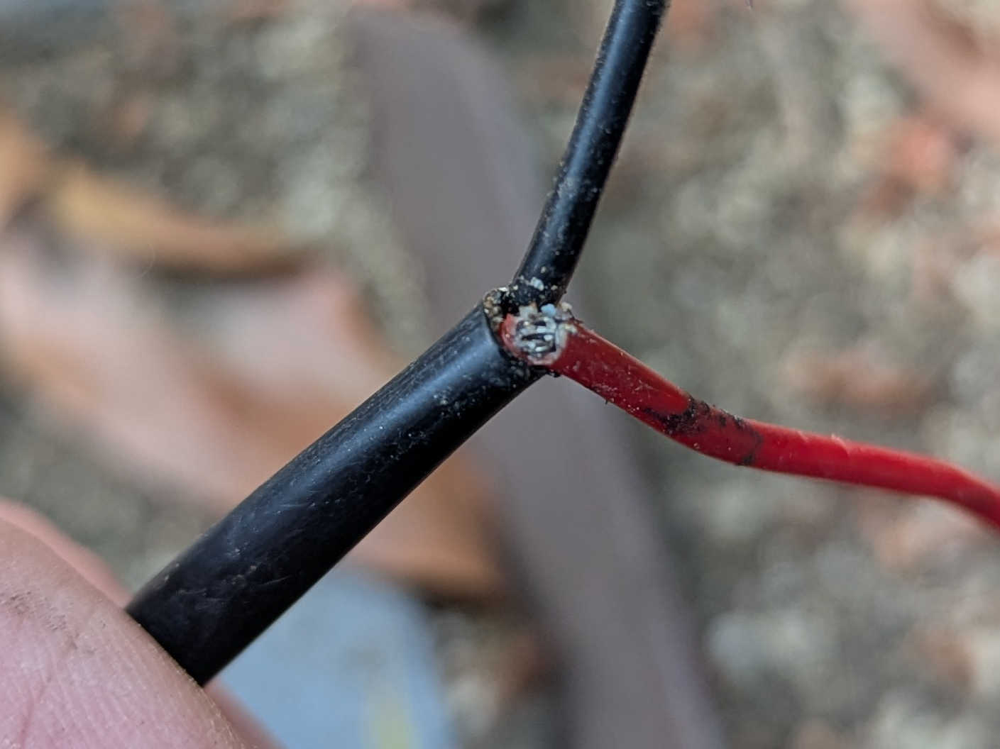
Harper pulled out some extra wire that was previously left in the vault as spare, and I used that spare capacity to trim the damaged wire and try this again. GF (and GD and GG) now correctly show green, let’s hope it lasts longer this time around.
Having resolved this signal issues with Sunday impact, I was curious and followed Harper as he moved on to track work. First on the list was the point of derailment by UP1989 on Sunday. Determined the rails were a little too narrow, the rails were not level, and the outside rail took a nontrivial dip right around that area. This combination of factors could explain derailment.
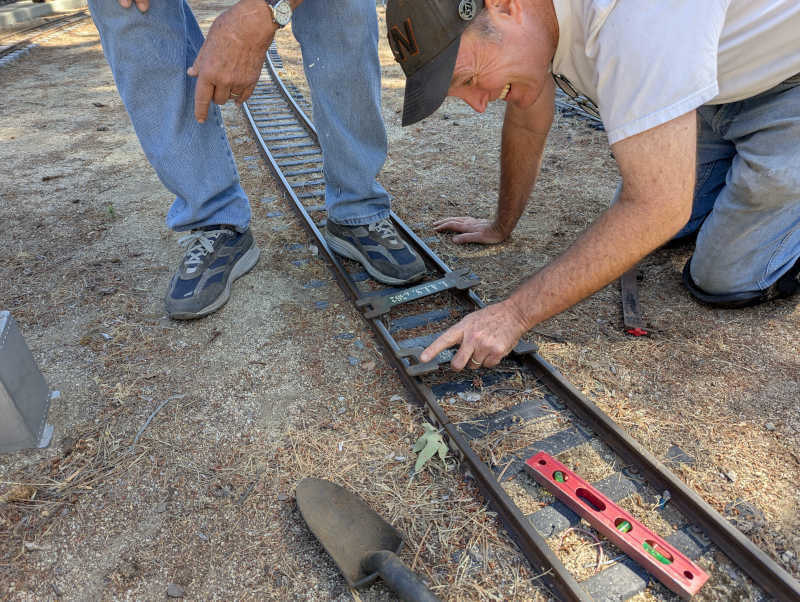
Helped Harper widen the rails a bit and make the two sides more level. The dip is more challenging to address plus a higher risk of making things worse. (Like turning a dip into a launch ramp.) So we will await De Phillip opinion.
Second on the list was a short segment of track that was supported by only a single tie in the middle of the span. Stress of running over this segment went into loosening the joiner bolts, resulting a short segment that would see-saw as a train went by. It’s only a matter of time before it comes apart and the train derails. Since this segment was on the rail leading into station, that raises the priority of getting this fixed.
Tightening the joiner bolts would address the immediate symptoms but not solve the underlying problem. Doing it right means moving some ties around plus adding one in order to support all rail joints in that area. Once done, weight of train goes into the ties instead of into loosening bolts.
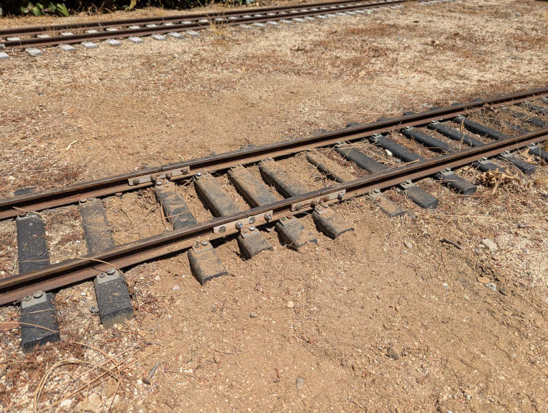
2:00PM - 4:00PM (2 hours)#
After lunch break Harper resumed his signals block labeling project using washers of various colors. I went to look at Santa Fe Electric. My first lesson is that she’s not to be pushed around. After huffing and puffing for a few feet I gave up and powered her up. Sometime later I want to determine if this is just the nature of the drivetrain or if there’s undue friction that needs attention. Or perhaps she’s got a parking brake that automatically applied when unpowered? I know that exists on my salvaged wheelchair motors.
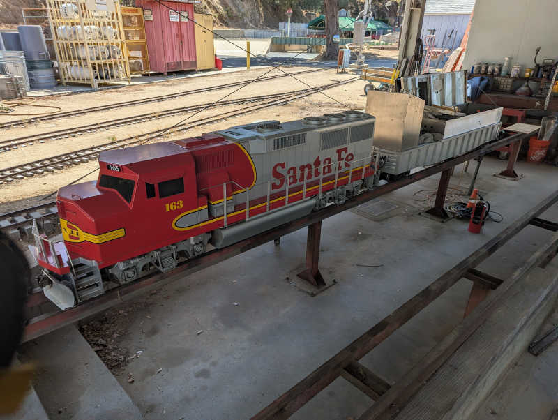
This orientation lookaround was informative. I now know the drivetrain consists of motor gearboxes whose output shafts are wheel axles. Four sets of them, one for each axle. The front-most axle also has a skid plate under the gearbox to protect it from debris. I don’t understand how her suspension articulation works yet, that’ll require more future study.
Looking at seams on the body, I have a guess it comes off in two sections but I won’t try it until I can do it under supervision of someone who’s at least seen it done.
Looked around inside the storage box of the riding car and found many items of interest and a few that can be tossed. For example, a small orange safety cone that has become brittle with age and cracked in half.
As for actually doing something useful, without lifting the body I really can’t deploy my multimeter. But I can do the first step of electrical diagnostics: reseat all the connectors. There were several between the engine and the riding car. Some of them look a little toasty and their replacement would be good future candidate project. I found a medium-sized two-prong plug was loose, and the large Amphenol connector was also loose. I was able to turn the external ring about 3/4 of a turn before I encountered resistance, and that resistance felt like it was pushing the plug back into place.
Once that was done, I plugged in an extension cord already in the maintenance bay. Within a few seconds, I can hear the cooling fan spin up. I’m not sure if reseating connectors did the job or merely a big coincidence, but the result is that we can charge in preparation for next Sunday operations. I’ll take that as a win.
Sunday 2026/4/26#
- 13.75 hours today, 242 hours this track year.
Sunday operations plus so much more!
7:45AM - 5:30PM (9.75 hours)#
Arriving early eastbound on Zoo Drive by Travel Town, looked over at Smith Valley to see signal lights. “Oh, someone’s already running!” Pulled into the parking lot to find all signals off. “Uh-oh.” Need to look into panel S power after Sunday public runs.
I asked to run my morning practice laps on Santa Fe Electric. Around and around I went, learning lessons along the way. The electric drivetrain has more immediately response than the gasoline-hydraulic of UP1989. Also generally smoother in transitions, though the transition from resisting sliding backwards to forward powered motion is quite jarring and must be managed with air brake system.
On the first and second practice laps, I saw the four-head signal coming down Davis mine and the three-head entering station were both set to mainline and both showing false reds. They indicate two different track blocks so it can’t be the same issue… can it? By my third lap, they showed the expected green. Have to watch for return of this issue and hopefully get more data later.
Since I started my practice before the pre-run inspection checklist basket was set out, I staged SFE in the station and got it done before the safety meeting. Found an air leak in the line to caboose. Asked M. Bassett for a second opinion and he hand-tightened it enough that bubbles no longer formed. Cammarata said that is good enough: do not use a wrench to tighten any further.
Asked around to see if there’s a certified engineer to take over SFE for Sunday operations, and Cammarata said it can be me if I want it. Recruited Bickel as my conductor. OK let’s go!
First lap: Cammarata sat immediately behind with feedback along the way. Lap completed uneventfully and no critical problems requiring Cammarata to take over. A good start! Cammarata signed off and returned to his normal ops duties.
Second lap: Alexander sat immediately behind me, again with feedback and as backstop alternate in case he needs to take over.
Third lap: Alexander sat in one of the bench cars further back. Still available as backup if needed but no more hand-holding for me.
Fourth and onwards: I got confident enough to run solo and did so for the rest of the day (minus lunch break) all the way to final public train and locking up west gate.
A successful first day running public!
After Santa Fe Electric was put away, I asked about the proposal to swap two club owned locomotives: 2468, which is in Alkire behind a general member lock but not commonly used for public runs, and the center cab work locomotive, which is locked in Phil West which not everyone has a key. (I don’t!) I learned the next step is to measure overall length of those two engines to see if there’s enough physical space available. Hollis and I went and measured center cab at 144" coupler-to-coupler and locomotive 2468 at 148" long. The center cab has about 18" of space to spare between it and the Santa Fe Electric so the swap is physically feasible. Data points and submitted for consideration!
I then took the center cab to carry my tools over to panel S to examine its power board. It is indeed stuck on: continuity across the AC line terminals regardless of NT signal. I see two possibilities:
- Relay has failed closed, regardless of audible clicking in response to NT signal.
- Auto/Manual switch has failed closed, regardless of physical position of switch lever.
Since they had been soldered in parallel, there’s no way to tell without unsoldering one of them. Which is not a field repair. So in goes the second power board I received as backup for panel K repair earlier.
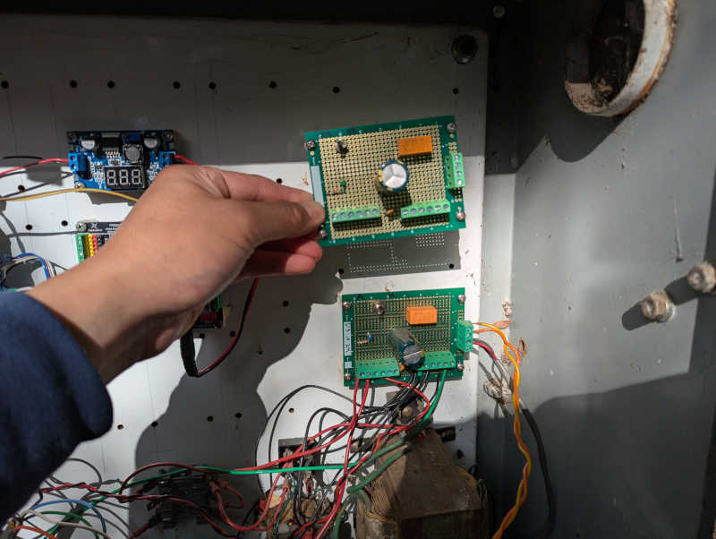
I returned to east end intending to look into a false red, but took a break to chat with H. Finch for a bit.
6:30PM - 9:30PM (3 hours)#
After the chat I looked into a false red that started happening in the middle of the day. It is signal GF, eastbound entering the Eppich tunnel, an area with limited visibility and thus important for safety. Looking at surrounding lights I also saw GD red and GG yellow, all consistent with a failure in panel G block 10. Opening up panel G I saw the expected fault indicator. I measured voltage across the detector board terminals to be ~14V and voltage across feed wire rail terminals to be 0V. Broken feed wire is not good, the fact this wire was only installed recently is worse. I’m losing daylight so I’ll have to come back later.
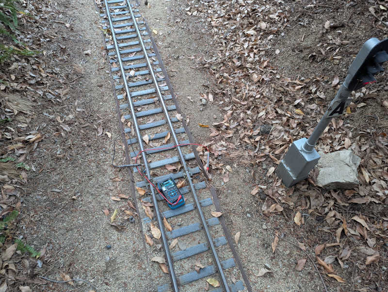
When I returned to the east end I got word the locomotive move has been approved and I’m free to execute it whenever I want. I liked the idea of being able to get the center cab out without finding somebody with a Phil West key so I started immediately on my little Towers of Hanoi project shuffling three club locomotives around.
A bit after all three trains are at their new homes, I noticed the Santa Fe Electric cooling fan is not running. This usually happens when it is charging so I was concerned. Suncin confirmed that the fan is supposed to run.
Maybe it just needs a bit of time before getting warm enough to need a fan? I decided to wait, taking a break to chat with Burden as he packed up the Heisler to run at Joshua Tree and Southern.
10:00PM - 11:00PM (1 hour)#
I returned to my locomotive move project by pulling out my label maker and start labeling for the new train positions plus a small forwarding pointer at their old location explaining where they had gone. Checking the Santa Fe Electric afterwards and:
- The good news: it is charging as battery percentage is climbing.
- The bad news: the fan is still not spinning.
- The ugly news: metal grate over the non-spinning fan is getting warm just from convection airflow. I am worried about how hot it must be getting inside.
No combination of levers and switches I tried had managed to turn the fan back on. I’m not comfortable leaving it plugged in, getting hot without active ventilation. I’m going to unplug it before I leave and ask Suncin for pointer on what to do next.
Friday 2026/4/24#
- 2.5 hours today, 228.25 hours this track year.
Signals victorious!
8:00AM - 9:30AM (1.5 hours)#
Picked up where I left off with false reds HA and HB on McKelvey signal bridge. Traced it back to bad feed wire joint inside one of the vaults, where the indoor-use security wire fell apart in this outdoor application. Black wire and insulation had broken apart. Red wire was barely holding on, but there wasn’t much left of the wire, either. Most of it had turned to greenish dust.
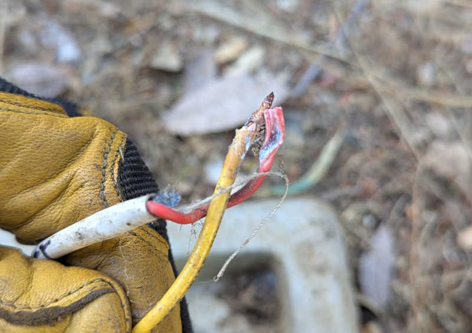
12:30PM - 1:30PM (1 hour)#
After going home to get my panel keys I had left there, I could get in panel I to test a hypothesis formed after a good night’s rest: the reason IDA red would light up in test mode is because both red and white wires received power.
The four-conductor wire bundle for IDA from panel I to signal head had indeed degraded. There were mega ohms of resistance from ground and green light wires to other wires, which should have been open circuit (infinite resistance) so they’re already bad. White and red wires are worse, with only kilo ohms of resistance between them. When dealing with milliamps for lighting LEDs, that is a problem.
If only red or only yellow received power, as is the case during normal operation, this degraded insulation meant electrons can find their way to the other wire and an escape path easier than pushing through to light up the LED. But when both red and yellow are powered in test mode, the easiest path to ground is through the red LED.
In order to simulate this condition, I tied red and white wires together at both ends treating them as a single wire for delivering power to the red LED. This worked, at the expense of yellow, which I think isn’t used anyway.
But still, this is only a hacky workaround. The real fix is to run new wires.
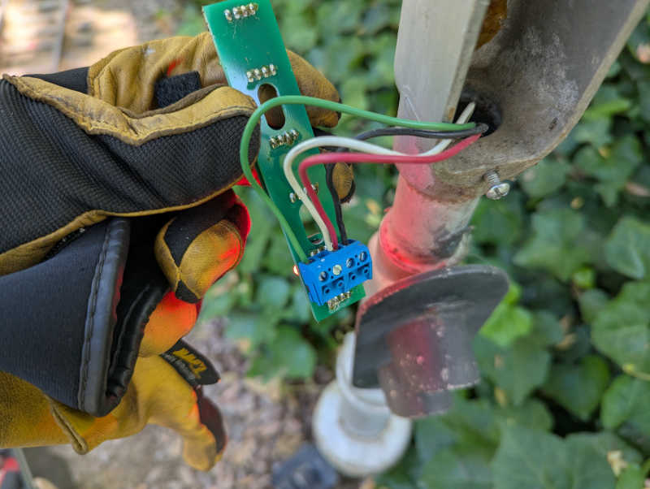
Playing with Trains (no club hours)#
Spent the rest of the afternoon watching Cammarata work on Gold Rusher and helped isolate the drivetrain resistance to right hand side piston stroke moved out of range due to loose set nut.
Thursday 2026/4/23#
- 11 hours today, 225.75 hours this track year.
Signals work
8:15AM - 12:30PM (4.25 hours)#
During Monday’s training train run I noticed every panel K signal stayed dark the whole time. Even if it were disconnected from NT ring it should have turned on when we crossed its detector block. Went to look there and found a power board that never comes on. A replacement board will have to be found and installed.
Panel S was also off. Opened up the panel and saw master power switch was off. Flipped it back on and all was well. Last time we remembered working on this panel was to do ESP32 reflash on 4/17 which improved Stutson crossing bell logic. We wouldn’t have turned the panel off and left it off that day. Weird.
While panel M did turn on when we crossed its detector block, it should have already been on when we got there. Found a bad connection in the vault right under panel M, with wire nut holding together NT+ wires for panels I, K, and M. Cut back damaged wires to expose clean(er) wire and reconnected. Looks like K-M is back but I-M is still not doing anything. Something for later.
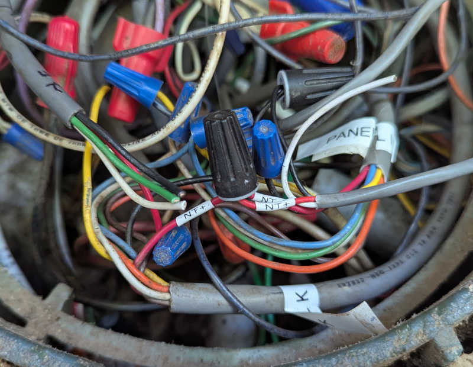
1:30PM - 8:15PM (6.75 hours)#
After returning from lunch break and before we head west again, went into IS-1 looking for power board. I was handed two boards. One for panel K today and another on standby for later.
Most of the afternoon was spent banging our head against IDA red which would light up in test mode but stays dark during operation. Went down many false leads, such as concluding we lost power to the board until we learned the crossover mechanism is supposed to cut main power and then auxiliary power comes in another terminal. An… unorthodox… approach that threw us off. Tried a different signal board. (Same behavior.) Tried a different signal head right at the panel. (Everything worked.) Couldn’t figure out a plausible hypothesis for the “works in test mode” behavior before team had to disperse.
After Strawn and Harper left I went to perform my solo assignments. The first one was swapping out the power board in panel K as decided earlier today. This restored K to proper NT ring operation.
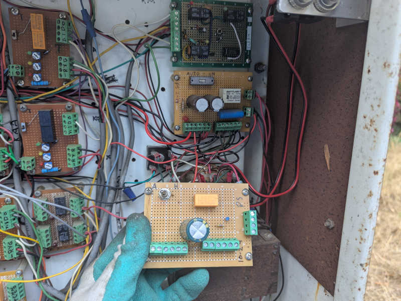
Next was signal head KD, the one exiting Dusty Shores before covered bridge. This has been dimming over the past few weeks. It used to get really dark after a rain but now it’s dark rain or shine. The underground green wire has gone bad. As a short term workaround, the lights for green and yellow lights were swapped. Now green shines bright but yellow is dark. We need to run new wire soon.
Final task of the day was GG, the Pennsy signal everybody sees on their way into the parking lot. There was a collection of retired bulbs and I dug up two green lights for installation. Green now shines steadily to greet LALS members when they arrive.
I turned around and saw HA/HB were showing false reds. Well, that’s new! Ugh. I’m not dealing with it tonight.
Monday 2026/4/20#
- 6.5 hours today, 214.75 hours this track year.
Level 1 Enginner in-class lecture and on-track practice.
8:30AM - 3:00PM (6.5 hours)#
Started the day in the meeting car with PowerPoint presentation on Level 1 Enginner responsibilities during public runs. Thankfully none of the major concepts were new, though there were some fun history. Because of my time working on signals, I’m past that particular common hurdle for club engine operators. That lets me focus on the other aspects like synchronizing throttle and air brakes for smooth starts and stops.
After the in-class portion, fellow classmate Campbell and I pulled out UP1989 for a few practice laps. Got some good tips from Nelson that I don’t need to bleed air all the way down. This makes sense: when coming to a stop in a car I don’t press the brake pedal all the way down. Doing so can result in a jerky stop - just like what I’ve been getting with a train! Easing off to 30 PSI or so instead of 0 PSI seems to help.
For half of my final lap I simulated heavy stop-and-go traffic, stopping at every signal. Not only was it a good practice of stopping and restarting, the signal head also serves as a good target for me to practice stopping at a place of my choosing.
A little more practice is needed, probably this coming Sunday. I’m not ready for my final exam check ride just yet but I think I’m close.
Sunday 2026/4/19#
- 6.75 hours today, 208.25 hours this track year.
Sunday public run crew - Disney intern event
8:30AM - 2:45PM (6.25 hours)#
Morning setup and miscellany ended with early lunch so I can relieve crews getting their lunch. Conductor for Santa Fe Electric with Chavez and Ronne then switched over to Alexander to more easily transition to intern event.
2:45PM - 5:00PM (No club hours)#
Alexander hosted a group of Disney Imagineering interns, who arrived in the afternoon to visit Carolwood barn then came over to LALS side for a train tour of our model railroad layout. The group BARELY all fit on a single train. There were some Q&A both before and after the headline train ride.
Alexander let me handle CN2002 for a lap. I took it down to Smith Valley where I promptly derailed it. sigh Not a great start! The first truck was fine but the second truck popped off. There were no obvious causes for derailment, further investigation needed.
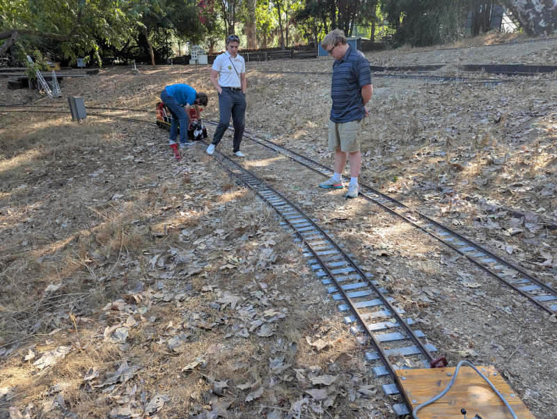
5:00PM - 5:30PM (0.5 hours)#
Put away bench cars and CN2002.
Saturday 2026/4/18#
- 8 hours today, 201.5 hours this track year.
Big signals work day reblocking and activating panel M!
8:45AM - 12:00PM (3.25 hours)#
Taking care of the list of issues yesterday cleared the board today for the rail reblocking work in preparation for new siding. Pederson joined Strawn and myself in getting ready. The morning started with reversible tasks, meaning if we encounter problems we could still restore the system back to the way it was in time for Sunday public runs. Things like replacing a few rail links with electrically isolating bars at new block boundaries, then electrically reconnecting them with bond wires so they act as they did before.
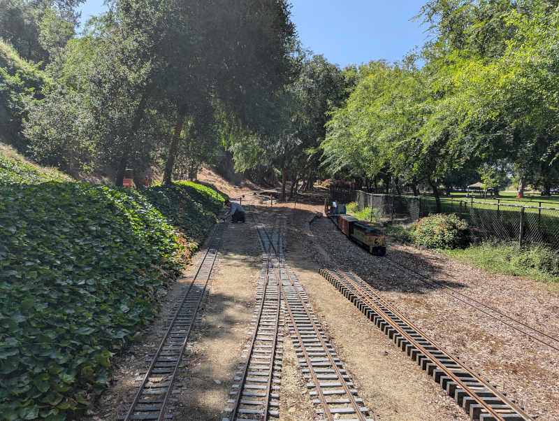
1:00PM - 5:45PM (4.75 hours)#
After lunch we quickly ran out of reversible tasks. Looking at the clock and looking at the remaining tasks, we decided to go for it! Those backwards-compatible bond wires were removed, new feed wires enegized then connected to detectors in panel M, as did two signal lights. It all went about as smoothly as can be expected, and we didn’t break anything critical to Sunday run operations. This was a long, but successful, day.
At the end of the day I took a detour out to signal GG, the Pennsy light everybody sees on their way into the parking lot. It has been blinking erratically so I opened it up expecting to hunt for a loose connection. What I found are old style incadescent bulb sockets with LED retrofit modules sitting inside. At the time of diagnosis, the bottom green was blinking and the top was steady.
Experiments:
- Swap two green bulbs. The same bulb (now top) blinks.
- Swap green with yellow bulbs. The yellow bulbs stay on solid.
Not a loose connection, then. It’s failure of LED driver module doing its best to pretend to be an incandescent bulb. I’ll have to get some of those bulbs.
Friday 2026/4/17#
- 6.25 hours today, 193.5 hours this track year.
Signals stuff that needed to get done before panel M rework.
8:00AM - 12:30PM (4.5 hours)#
Arrived to see signals already powered on and nobody on the track. Good opportunity to figure out who’s triggering the false powerup and why. Unfortunately the diagnostics method is to walk around turning off panels with NT boards and see if the whole layout turns off along with signals near that board.
Panel M was supposed to join in the timer ring network via panel I, but panel M did not turn on when everybody else did. Looks like the wire to I is a dud so we have to use a wire to K for the purpose.
When I opened up panel S, I saw 12 minutes on the timer which was absent from other panels. I turned off panel S, and everything went dark. Visual inspection found no obvious problems with panel S NT block but we can at least mitigate its effects by reducing timer duration from 120 minutes down to 30 minutes.
While at panel S we could try the other experiment: a second ESP32 board flashed with code from the repository was swapped into the panel to test field-swap capability, and it worked! As a secondary bonus we now have improved logic for triggering Stutson crossing bell.
Swapped out JFA clear lenses for faceted (bugeye) lenses. Strawn and I preferred the faceted lens, Harper didn’t think they looked very different. Proceeded to try swapping out JFB as well but…. GAAAH ANTS! The ants are back trying to rebuild their home. I’ll need to bring reinforcements later.
To test new lens, panel J was opened up to switch signal to test mode, and we noticed its NT board to be dark. It should at least be showing 000 on its 7-segment LED. Probing the wiring, found its arrangement made no sense. It appears to have been wired with N+/N- mixed up with VCC/GND and a mystery how that could have possibly worked. Compounding that mystery, it shouldn’t kill the board, either.
2:00PM - 3:45PM (1.75 hours)#
Lunch break included a detour to Home Depot to pick up a few items including a can of RAID ant spray. That cleared out JFB so lenses can be swapped out without ants crawling all over me.
Leaving the lenses out for their trial run, we installed a motor cover box just built by Davis for the larger motors. We’ll need another anchor to screw the box tabs into, but we have enough today so it doesn’t flop around.
Wednesday 2026/4/15#
- 4.5 hours today, 187.25 hours this track year.
Signals @ LALS
Morning (no club hours)#
Fix Chessie locomotive. Motor field cables were replaced earlier, today a relay to replace the melted one was installed. Didn’t move. Looking closer we found a cable that would have been power supply for a lot of auxiliary components (LEDs that shine downwards, etc.) and its insulation had degraded from heat and is now vulnerable to occasionally shorting against a terminal that is usually ground. Not good. Once that’s fixed, Chessie still didn’t move, but then we figured out it was because “Master On/Off” got bumped sometime during this morning’s work. Flip that to “On” and Chessie is back in business.
3:00PM - 7:30PM (4.5 hours)#
(Lost notes on what happened after lunch in Smith Valley)
Went over to check out latest siding track work by De Philips to compare against plan for initial & future signals support. The siding work had some deviation from original plan due to terrain and vegetation, so signals plan must be updated to suit.
Disconnected all panel J motor 2 wires so I could measure resistance across them. They are all in the single digit ohms of resistance. The white one is a little worse but not a huge deal.
| Black | Green | White | |
|---|---|---|---|
| Red | 2.39 | 2.83 | 4.9 |
| Black | - | 3.2 | 4.5 |
| Green | - | 6 |
Went to look at JFA/B wiring. Start by cutting off about 1cm from end of nasty ant stuff contaminated and corroded ends. This brought back five out of six wires but JFA green still has about 470 kilo ohms of resistance instead of single digits like the rest. There’s a chance I might just need to cut it some more to reach shiny copper but it’s more likely the wire is gone and need to be replaced.
Since the wire is degraded and we have no standard lights to replace ant damaged JFA/B I decided this was an opportunity to try out the 3D-printed single LED + lens signal head I built, derived from the STL I reverese engineered. Green is still dim due to wire but the rest look very promising.
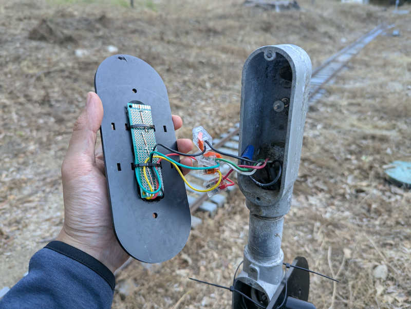
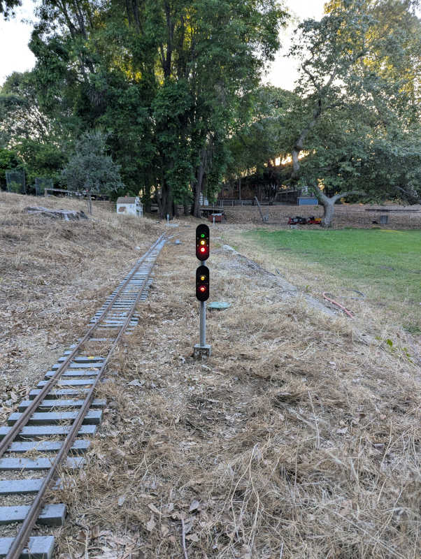
Tuesday 2026/4/14#
- 4.5 hours today, 182.75 hours this track year.
Signals @ Home
10:00AM - 11:30AM (1.5 hours)#
Getting oriented with the Arduino sketch running in panel S. The basics seem sound but there was a diagnostic blinking LED pattern (binary counting) running on unused pins and I couldn’t find the code for it. Turns out that was because Brock never committed them to the repository.
Voiced my position that code repository must match deployed code.
1:30PM - 4:30PM (3 hours)#
I’ve been told the vendor who provided signal heads currently at LALS has new management who turned highly mercenary about the deal. We may be better off producing our own in the future. There was past work to generate a 3D-printable variant but those people are no longer working on the project. I was given a STL file so I sat down to reverse engineer its dimensions into a CadQuery file.
Now I have a baseline for future work.
Saturday 2026/4/11#
- 8 hours today, 178.25 hours this track year.
Signals work with a bit of landscaping for variety’s sake.
8:30AM - 11:00AM (2.5 hours)#
Finish mapping out wires in the 8-wire bundle running between panel M and panel K. The good news is that we should have enough to work with, though we’d have to see if the unconnected wires were unused because they were found to be broken sometime in the past.
Showed Stark location of hand tools, garbage cans, utility carts, and the organics bin. All set to rake leaves!
11:00AM - Noon (1 hour)#
Q&A session with Smith to sort out some open questions on signals system design intent and implementation.
Noon - 2:30PM (2.5 hours)#
Fire up the super sucker for some leaf cleanup action alongside Stark and Alexander.
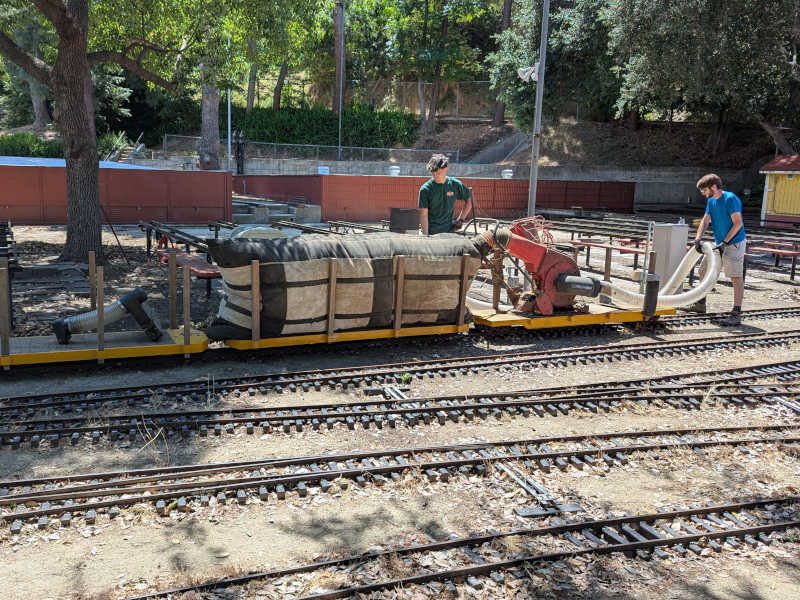
4:00PM - 6:00PM (2 hours)#
Returned to panel K to continue working. One of my assigned tasks is to install a new signal head driver board, my first. I quickly relized I had a problem as the new board is not compatible with the old form factor. I could solve this any number of ways so I shoud check if there’s a recommended method before I do anything drastic.
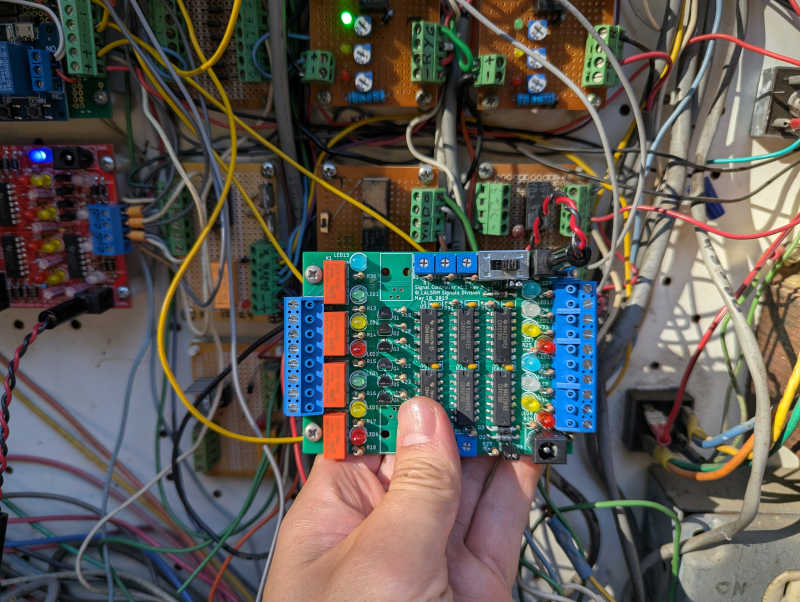
The official task is on hold, but we’re here and panel K is open so might as well make good use of the opportunity. Alexander and I brought up the iOS reference app, spread the reference printouts before us, and sank our teeth into learning how all this works together. It was a very productive sesson.
One focus were the signals on either side of the reversing track. Panel schematic describes design intent of red over flashing red when the reversing track is selected. Eastbound KEA/B does this but westbound KAA/B shows dark over flashing red instead. Studying how they differed, we determined the KAA red signal wire had been repurposed to notify panel I so the previous signal (IN?) can turn yellow. Armed with that knowedge we returned to KEA/B: how did it notify its previous signal to turn yellow? The answer: It doesn’t! That’s LEA/B which does not turn yellow when KEA is red. So right now it looks like we can have the intended red/blinking-red OR transmit status to turn previous signal yellow, but not both. How would we wire up panel K so we get both? To be continued…
Non-club hours#
Got to examine a flat bed car being repainted, with components disassembled. I was most interested in the wheel bogie (truck) because I am still not confident I understand the articulations required to operate on track. I now think I have enough of a grasp to 3D print a few ideas and see how they work before I make them out of metal.
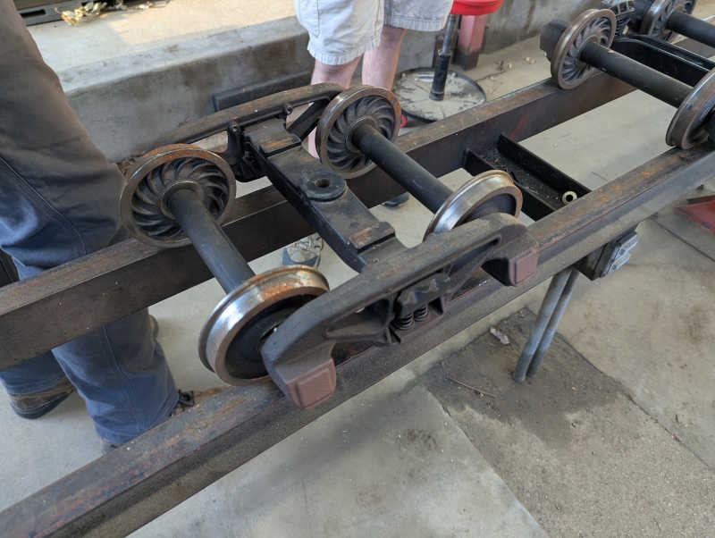
Friday 2026/4/10#
- No logged club hours today, 170.25 hours this track year.
Chessie TLC
12:00PM - 3:00PM (no club hours)#
Helped fix damage to Chessie locomotive. Two burnt wires were replaced with generic automotive battery cables from O’Reilly Auto Parts. No luck finding a local source for replacement 3PDT relay so that’ll have to wait to be delivered. A remnant of speaker box for engine sound system was removed, which should improve ventilation. I got my first look at the lighting system inside the cover. Whoever worked on that before did not belive in trimming wires to length.
After Chessie was put away to rest while relay is in transit, I got to see an OS Engines Mogul steam locomotive that can use some exercise. It won’t get run today but hopefully soon.
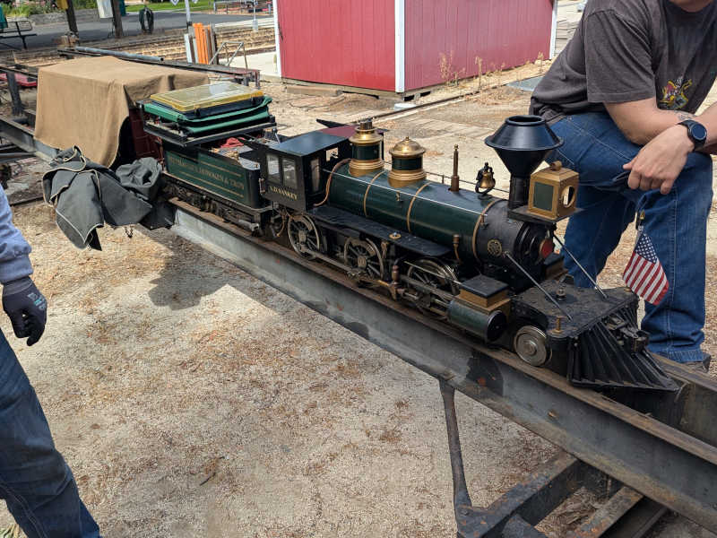
Thursday 2026/4/9#
- 9.5 hours today, 170.25 hours this track year.
Minor landscape and major signals work.
8:30AM - 1:30PM (5 hours)#
Started the day by installing a Harbor Freight solar spotlight to replace one that has stopped illuminating. When digging up the old one I found source of failure: something had chewed through a wire. I might be able to bring this back and asked Davis where a fourth spotlight could go if I do. He nominated up on high, second illumination source for the upper structure.
The new light sat charging up through the workday. At the end of the day I could verify this rail side feature has three spotlights again.
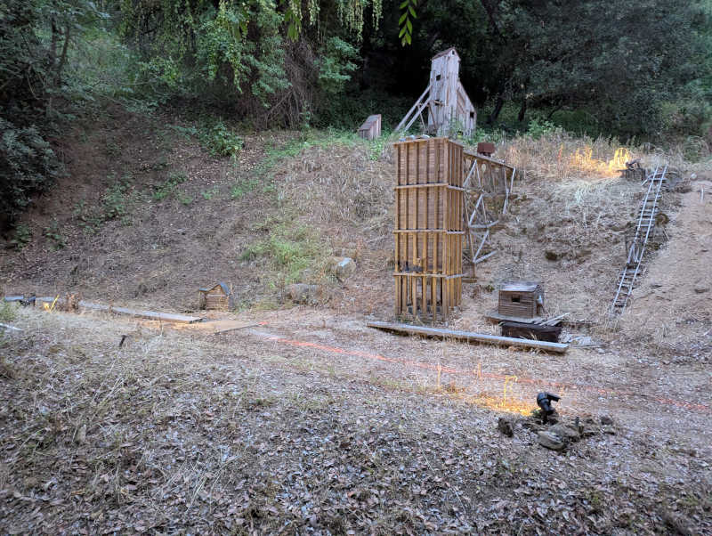
Then it is on to a lot of signals work! As an appetizer to the main wheel we stopped at a switch known to throw only partway. There were two parts to this puzzle. The first one is adjustment of motor limit switch positions, and the second is clearing out a long thin branch that had wedged in the mechanism preventing it from moving all the way.
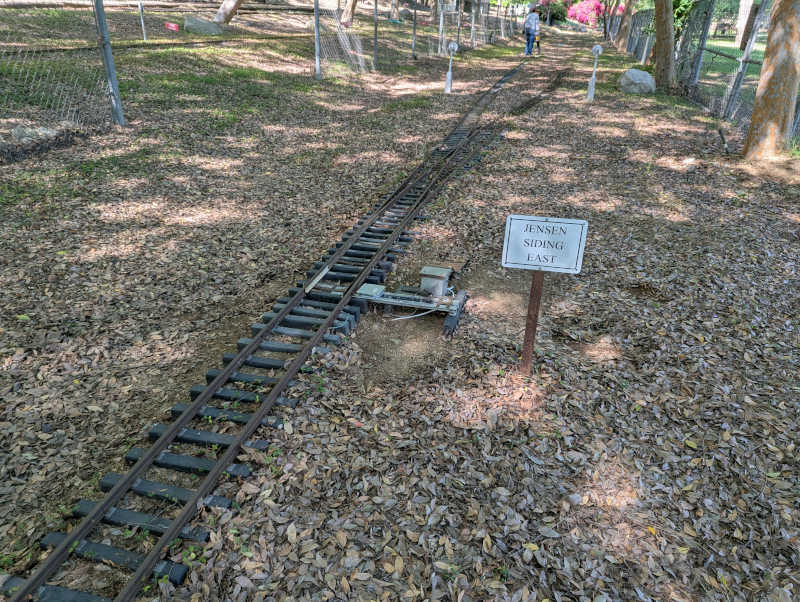
Then we moved on to experiments gathering data points on the new purple switch motor board failures. Today’s focus was on wiring quality as a contributing factor, with three experiments:
- Run new wires over the grass. Result: 100% success.
- Re-test with current in-ground motor wires. Result: 30% success.
- Re-test with in-ground point switch wires moved over to motor duty. Result: 30% success
Experiment #3 was very valuable because without it #2 might have been dismissed as a failed wire. But two entirely different pairs of wires failing in identical ways? Something weird is going on.
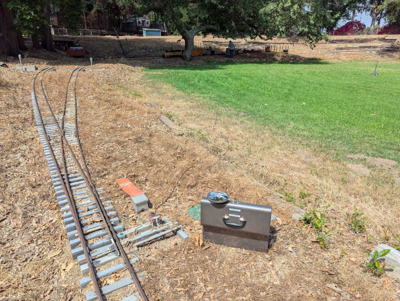
Signal lights JFA/JFB near this test motor has been very dim. Opening the head immediately exposed the reason: an ant colony had moved in. They had brought all the comforts of home not caring they blocked light, and their activities also damaged the circuit board. Hopefully at least the wires might be OK.
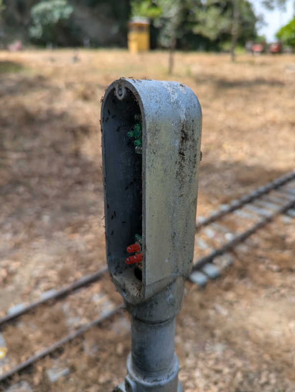
Then we went to map out rail detection blocks in preparation for upcoming work, and map out existing in-ground wires we might be able to repurpose. Sadly we found out our Chessie locomotive is not happy staying on “brake mode” to hold position on a hill for an extended period of time. Some electrical components were damaged and will need to be replaced before our signals buddy can return to work. Next time: use mechanical chocks.
At the end of the day I tried to bring a yard rail switch back online as a solo project. It was the old style of rail switch motor and a never-used spare of the type had recently surfaced. I asked for it thinking this would be an easy easy swap but sadly it was not. Two rusted fastener breakage later, I admitted defeat and stopped digging myself any deeper. I closed it back up, still in failing state, with intent to revisit later.
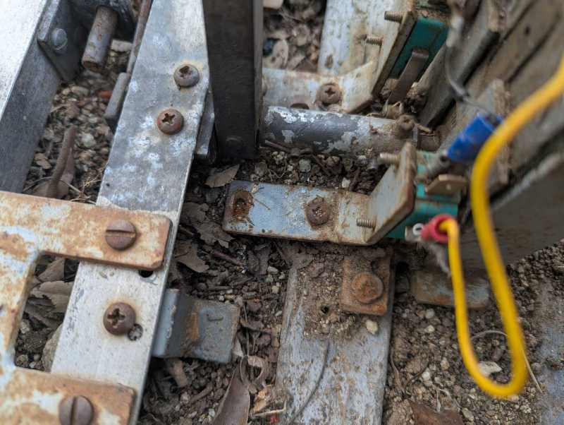
Tuesday 2026/4/7#
- 3.5 hours today, 160.75 hours this track year.
Rust removal, signal board replacement, fire extinguisher check.
2.45PM - 6:15PM (3.5 hours)#
Came back to finish the job on the south side tool car door. Now it is wholly shiny.
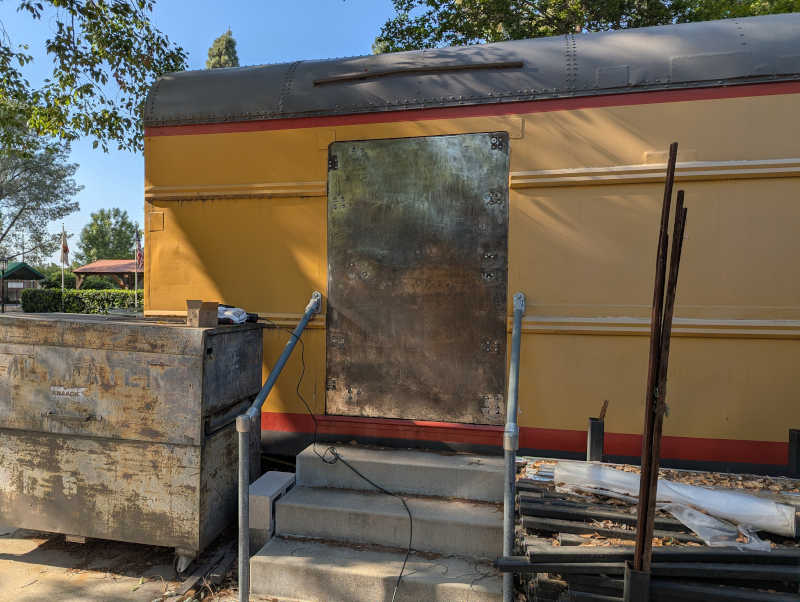
There are still a few spots around fasteners, and I could only get one edge out of four, but I got the most exposed surfaces so while not perfect it’ll go a long way.
After that was complete I proceeded to execute step 3 of detector block musical chair and replaced flaky panel G dual block detector board with a working unit freed up from panel K consolidation.
After that was done I walked around to visually inspect fire extinguishers to verify their gauges still show needle in the green zone. Helping in this task is a location map I created on top of a screen shot of LALS layout from https://openrailwaymap.app/
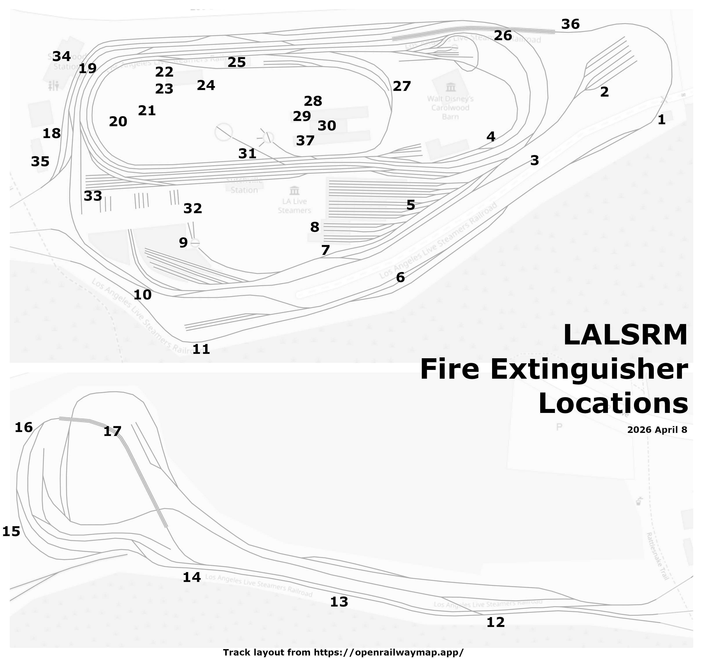
Everything looks good though I couldn’t access three units: #34 in the ticket booth, #35 in the caretaker caboose, and #37 in the meeting car. I’ll ask about them later.
Monday 2026/4/6#
- 3 hours today, 157.25 hours this track year.
3:15PM - 4:45PM (1.5 hours)#
5:30PM - 7:00PM (1.5 hours)#
On March 17th I took all the loose brown rust off the already mounted (south side) tool car door. Now I’m back to work on the tougher black layer underneath. I got about 60% of the way down before I had to put the project on hold for board meeting.
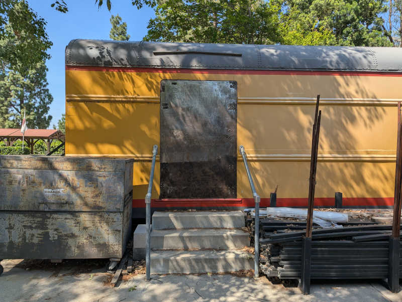
Interleaved with this work was a quick experiment trying to buff out the paint on the meeting car to see if it’s a viable alternative to repainting. It helps but the final decision was to proceed with repaint plan.
Sunday 2026/4/5#
- 8 hours today, 154.25 hours this track year.
Sunday public train crew.
8:00AM - 10:45AM (2.75 hours)#
Engineer training on UP1989. Includes performing air line and brake check. Staged it properly in station with a full tank of gas for a certified engineer to do public runs with it for the day.
10:45AM - 3:15PM (4.5 hours)#
Conductor for CN2002 pulling public train rides.
4:15PM - 5:00PM (0.75 hours)#
After the public rides wrapped up there was an hour of socializing. After that we put CN2002 away. This was the first time putting it on its storage track so there were a few wrong turns. Next time it shouldn’t take 45 minutes.
Saturday 2026/4/4#
- 1.75 hours today, 146.25 hours this track year.
Some club work but mostly focused on CN2002.
10:30AM - 11:30AM (1 hour)#
Execute step 2 of detector block musical chair plan. Move wires from existing dual-block detector board…
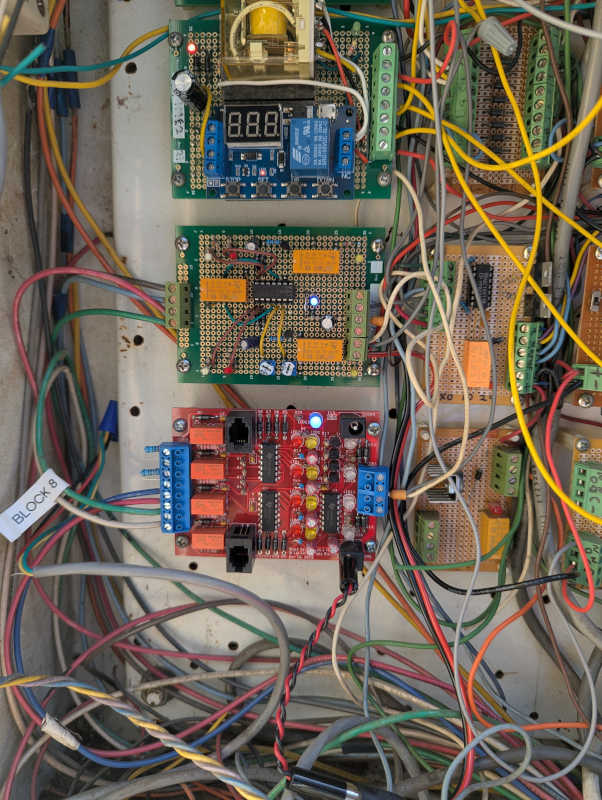
… and move them into the quad-block detector board as well as moving the board up one slot.
1:00PM - 1:45PM (0.75 hours)#
Merchant was here working on the new tool car door that I had partially de-rusted. Moving it for work meant some previously-inaccessible portions are now accessible. While Merchant enjoyed a late lunch I went in with my tools to remove more rust.
Other activity (no logged hours)#
Potential new club member Stark was on site to look around and meet people. I will be one of his membership sponsors.
Help Alexander get CN2002 ready for inspection so it can be certified to pull public ride trains tomorrow.
Thursday 2026/4/2#
- 6.25 hours today, 144.5 hours this track year.
Mid-week signals work
8:00AM - 12:45PM (4.75 hours)#
Started the day intending to fix false reds that came up during this past Sunday public run and, annoyingly, they were all clear in the morning. Intermittent issues, ugh!
Fortunately the panel G false red came back later in the day so I could probe it to find the track voltage within range so the fault is not a bad bond wire or track resistor. I probed voltage from detector board input ground to the track wire and… the fault LED cleared up! That’s new.
Several minutes later, the fault returned and I could clear it the same way. (Measure voltage from board input ground to track output.) It came back within a minute, and I cleared it again, but then it didn’t come back. Doesn’t matter, this board is now untrustworthy and on the replacement queue.
Panel K false red was tracked to a detector board as well. The failure mode on this one is: we can trigger a false detection just by lightly touching the circuit board. Behavior implies a loose solder joint somewhere but there were no obvious candidates.
Plan:
- Replace touch-sensitive panel K dual block detector board with newer quad block detector board. This uses half the new board.
- Move wires from adjacent dual block detector board to the new quad block board. This frees up a currently-working dual block detector board.
- Replace the faulty panel G dual block board with one freed up from panel K in step 2.
Step #1 was done today, I’ll come back for #2 and #3 later because we needed the full team on installing a network timer node in panel M. This started with cutting the track to install a timer-specific detector block, and we have to return the rails to operating condition before we break for lunch. For one thing, our work train is stranded until the track is back in! It is past the cut point and there’s a tree trimmer crew onsite today and they’re blocking the track ahead with cut branches.
Once the track was back and the wiring installed, our work train had the honor of being the inaugural train to trigger the new timer as it backed over the new detector block. That was a very satisfying relay click.
1:30PM - 3:00PM (1.5 hours)#
After lunch the team reviewed plans on how the track blocks will be rearranged to support the new siding. Most of this will be handled in panel M, but there will need to be a few interface points to adjacent panels I and K. This is where we needed the vault I cleaned up the other day and I may have to do the same to the big tangle of wires in panel I.